🔌 회로 Circuits
⚡ 전류·전압 Current & voltage
🔧 저항 Resistance
정전기Electrostatics물리
전류와 회로Electric Current · 선생님 9.1 · P1.3물리
원자(atom)와 전하(charge)
전기를 이해하려면 먼저 원자(atom)를 알아야 한다.
원자 안에는 세 가지 아원자 입자(sub-atomic particles)가 있다.
하나는 양성자(proton)로, 양(+)전하를 띤다.
또 하나는 중성자(neutron)로, 전하가 없다.
마지막은 전자(electron)로, 음(−)전하를 띤다.
이 가운데 회로 속을 움직이는 것은 전자다.
전기(electricity)의 진짜 뜻
전기는 하나의 '물건'이 아니다. 에너지가 옮겨 가는 특별한 방식을 부르는 말이다.
우리가 전기라고 부르는 것은 실제로는 회로(circuit)를 따라 전자가 흐르는 것(flow of electrons)이다.
그래서 이 자료는 '전기'라는 낱말을 단원 제목에서만 쓰라고 한다. 답을 쓸 때는 전류(current)나 에너지 전달(energy transfer)처럼 정확한 말을 써야 한다.
전류(current)
전류는 전하가 흐르는 빠르기(rate of flow of charge)다.
정해진 시간 동안 전하가 많이 지나갈수록 전류가 크다.
전류를 재는 기구는 전류계(ammeter)다.
회로도(circuit diagram)와 회로 기호(circuit symbols)
회로를 실제 모양대로 그림처럼 그리면 시간이 오래 걸리고 알아보기도 어렵다.
그래서 모두가 같이 쓰는 표준 기호(standard symbols)로 회로를 나타낸다. 이것이 회로도다.
기호는 단순해서 그리기 쉽고, 누가 봐도 같은 뜻으로 읽힌다.
부품마다 세 가지를 함께 알아야 한다. 부품 이름(component), 기호(symbol), 하는 일(function)이다.
예를 들어 전선(wire)은 곧은 선으로, 전구(bulb)는 동그라미 안에 X를 넣어, 스위치(switch)는 선이 끊겼다가 비스듬히 열린 모양으로 나타낸다.
이 밖에 전류계(ammeter)와 모터(motor)도 기억해야 할 부품이다.
전지(cell)와 배터리(battery)
두 낱말은 비슷해 보이지만 뜻이 다르다.
전지(cell)는 화학 에너지(chemical energy)를 저장하고 있다가 전기 에너지(electrical energy)로 바꿔 내보내는 것 하나를 말한다.
배터리(battery)는 전지 여러 개를 직렬(series)로 이어 붙인 것이다.
그래서 기호도 다르다. 전지 하나는 길고 짧은 선 한 쌍이고, 배터리는 그 쌍이 여러 개 이어진 모양이다.
회로도 그리는 법
회로도는 연필과 자로 곧은 선(straight lines)을 그어 그린다.
선이 구불구불하면 어디가 이어졌는지 알아보기 어렵기 때문이다.
고장 찾기(find the fault)
회로도를 보고 어디가 잘못됐는지 찾고, 전구가 켜질지 안 켜질지 판단할 수 있어야 한다.
전구가 켜지려면 전자가 한 바퀴 빙 돌 수 있도록 회로가 끊긴 곳 없이 이어져(complete circuit) 있어야 한다.
선이 끊겨 있거나 스위치가 열려 있으면 전류가 흐르지 않아 전구가 켜지지 않는다.
고장을 찾았으면 어떻게 고치면 되는지도 말할 수 있어야 한다.
✍️ 꼭 알아야 하는 것
- 전기는 회로를 따라 흐르는 전자의 흐름이고, 전류(current)는 전하가 흐르는 빠르기(rate of flow of charge)다
- 전선·전구·스위치·전지·배터리·전류계·모터의 이름, 기호, 하는 일을 짝지어 알고 회로도로 그릴 수 있어야 한다
- 전지(cell)는 하나, 배터리(battery)는 전지 여러 개를 직렬로 이은 것이며, 회로가 끊기면 전구가 켜지지 않는다
📚 이 자료의 핵심 단어
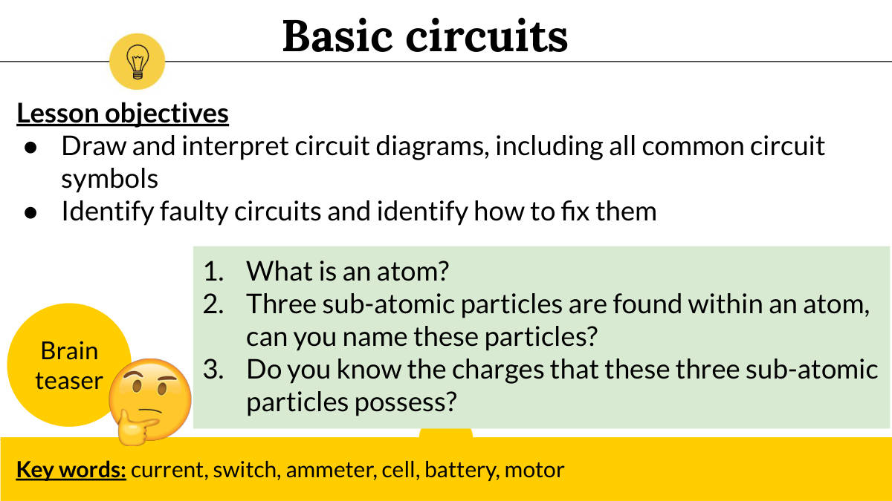
1쪽 · 기본 회로 – 생각 열기와 학습 목표
1. 원자란 무엇인가?
2. 원자 안에는 세 가지 아원자 입자가 있다. 이 입자들의 이름을 말할 수 있는가?
3. 이 세 가지 아원자 입자가 가진 전하를 알고 있는가?
핵심 낱말: 전류(current), 스위치(switch), 전류계(ammeter), 전지(cell), 배터리(battery), 모터(motor)
학습 목표
● 흔히 쓰는 회로 기호를 모두 써서 회로도를 그리고 읽을 수 있다.
● 고장 난 회로를 찾아내고 고치는 방법을 알 수 있다.
기본 회로
이 단원에서는 회로 기호를 써서 회로도를 그리고 읽는 법, 고장 난 회로를 찾아 고치는 법을 배운다.
핵심 낱말은 전류(current), 스위치(switch), 전류계(ammeter), 전지(cell), 배터리(battery), 모터(motor)이다.
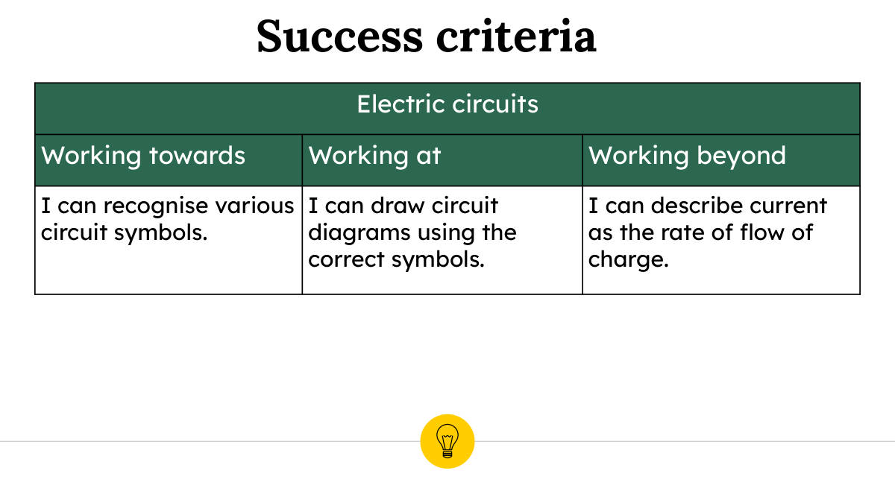
2쪽 · 전기 회로: 성공 기준
목표를 향해 가는 중
목표에 도달함
목표를 넘어섬
나는 여러 가지 회로 기호를 알아볼 수 있다.
나는 올바른 기호를 사용해 회로도를 그릴 수 있다.
나는 전류를 전하가 흐르는 빠르기(비율)로 설명할 수 있다.
성공 기준
이 쪽은 단원의 성공 기준을 세 단계로 보여 준다. 회로 기호 알아보기, 올바른 기호로 회로도 그리기, 전류를 전하가 흐르는 빠르기로 설명하기가 이 단원에서 해내야 할 목표다.

3쪽 · 9.1 기본 회로 (3쪽)
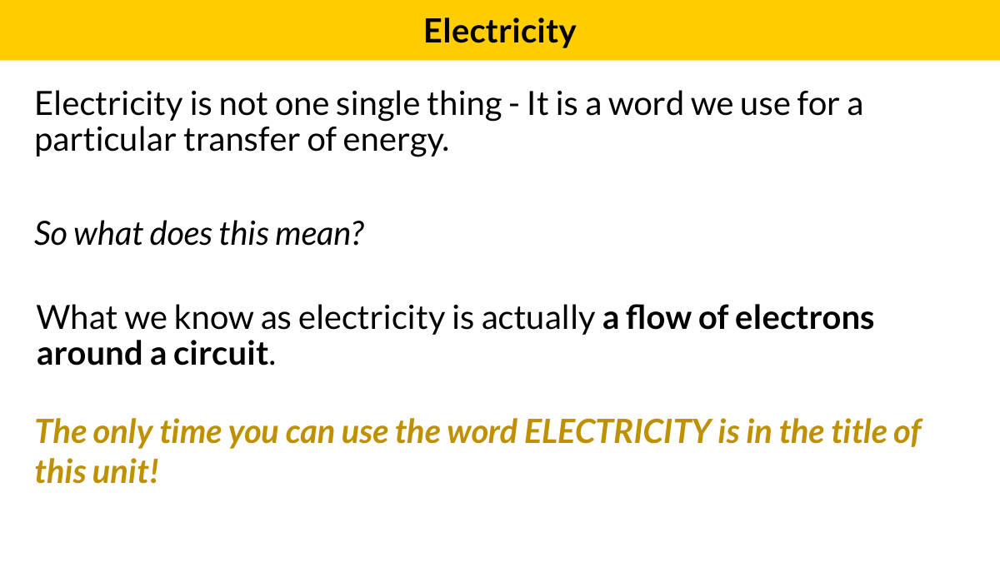
4쪽 · 전기란 무엇일까
전기는 하나의 단일한 것이 아니다 — 특정한 에너지 전달을 가리킬 때 쓰는 말이다.
그렇다면 이것은 무슨 뜻일까?
ELECTRICITY(전기)라는 낱말을 쓸 수 있는 곳은 이 단원의 제목뿐이다!
우리가 전기라고 알고 있는 것은 사실 회로를 따라 도는 전자의 흐름이다.
전기는 하나의 물질이 아니라 특정한 에너지 전달을 부르는 말이다.
우리가 전기라고 부르는 것은 사실 회로를 따라 전자가 흐르는 것이다.
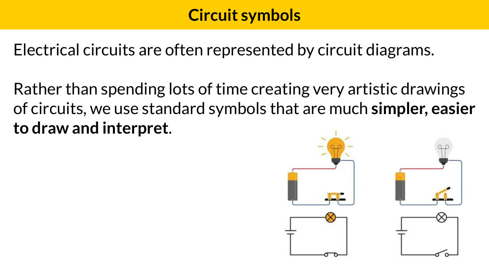
5쪽 · 회로 기호
전기 회로는 흔히 회로도로 나타낸다.
회로를 아주 예술적인 그림으로 그리느라 많은 시간을 들이는 대신, 우리는 훨씬 더 간단하고 그리기 쉽고 해석하기 쉬운 표준 기호를 사용한다.
전기 회로는 보통 실제 모습을 그린 그림이 아니라 회로도로 나타낸다.
회로도에는 표준 기호를 쓴다. 표준 기호는 간단해서 그리기 쉽고 읽기도 쉽다.
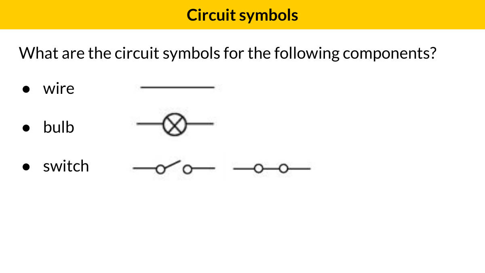
6쪽 · 회로 기호 알아보기
다음 부품들의 회로 기호는 무엇인가?
● 전선
● 전구
● 스위치
회로도에서는 전선, 전구, 스위치 같은 부품을 정해진 회로 기호로 그려 나타낸다.
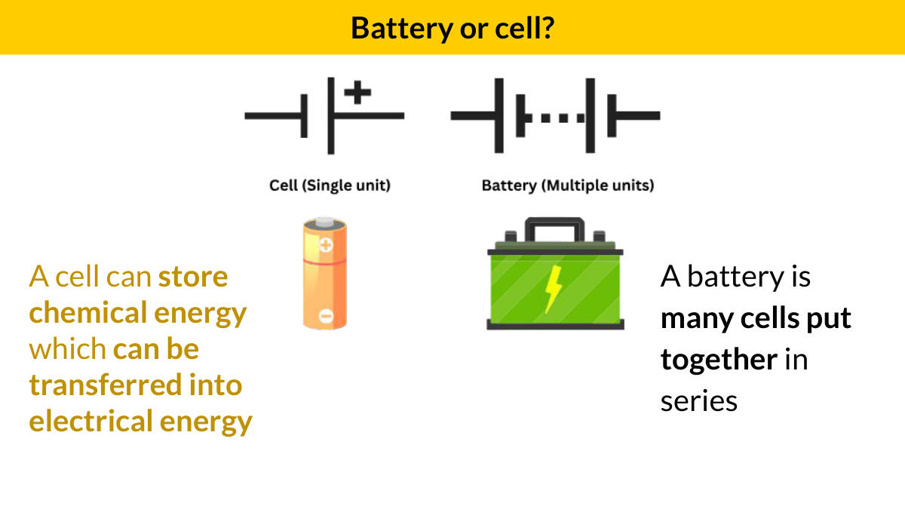
7쪽 · 전지와 배터리의 차이
전지(cell)는 화학 에너지를 저장할 수 있고, 이 에너지는 전기 에너지로 바뀔 수 있다.
배터리(battery)는 여러 개의 전지를 직렬로 이어 붙인 것이다.
전지(cell)는 화학 에너지를 저장했다가 전기 에너지로 바꿔 주는 것 하나를 말한다.
배터리(battery)는 전지 여러 개를 직렬로 연결해 하나로 만든 것이다.
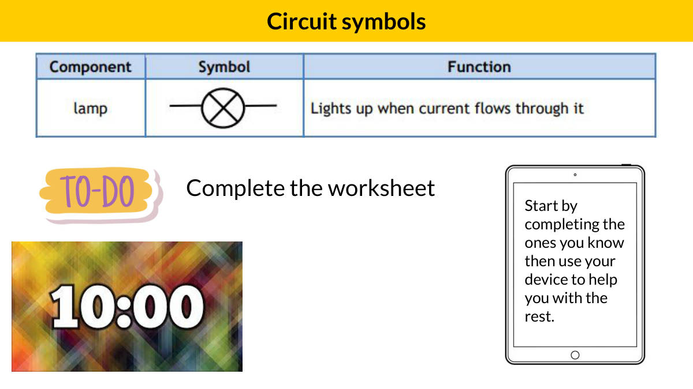
8쪽 · 회로 기호 학습지
학습지를 완성하라.
아는 것부터 먼저 채우고, 나머지는 기기를 이용해 도움을 받아라.
회로 기호 학습지를 아는 기호부터 먼저 채우고, 모르는 기호는 기기로 찾아 채우는 활동이다.
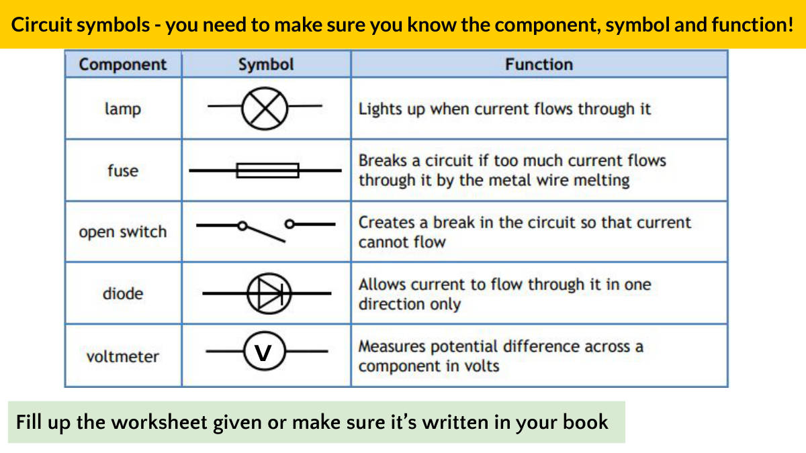
9쪽 · 회로 기호 익히기
나눠 준 워크시트를 채우거나, 공책에 적어 두어야 한다.
회로 기호는 부품 이름, 그 부품의 기호, 그 부품이 하는 일(기능) 세 가지를 함께 외워야 한다.
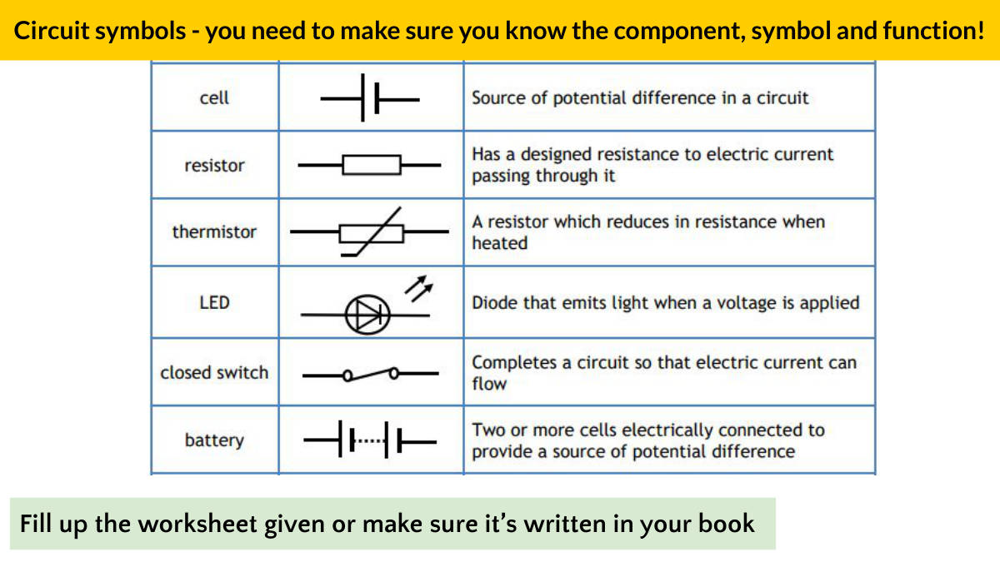
10쪽 · 회로 기호 익히기
나누어 준 활동지를 채우거나 공책에 꼭 적어 두어야 한다.
회로 기호는 부품마다 그 부품의 이름, 기호 모양, 하는 일(기능)을 함께 알아 두어야 한다.
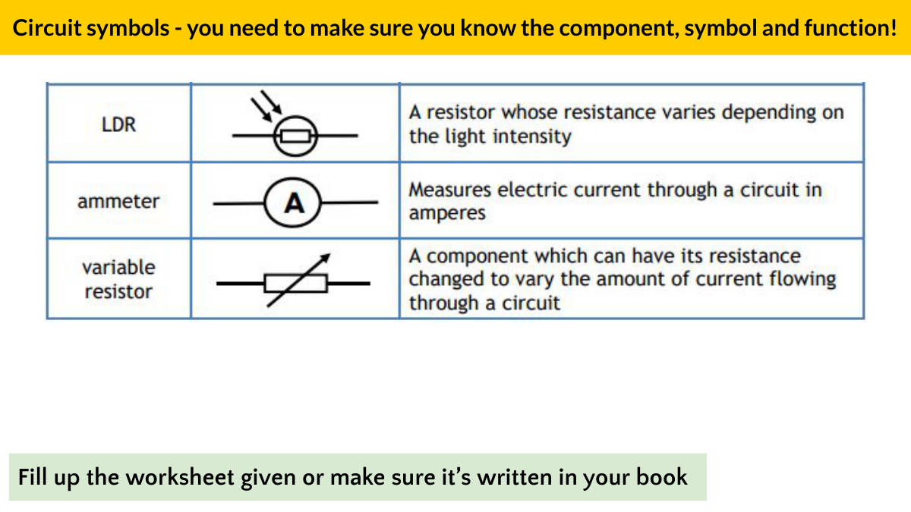
11쪽 · 회로 기호 익히기
나누어 준 활동지를 채우거나, 공책에 적어 두어야 한다.
회로 기호는 부품마다 그 부품의 이름, 기호, 기능을 함께 외워야 한다.
12쪽 · 나는 무엇일까?
'What am I?'는 '나는 무엇일까?'라는 뜻으로, 답을 맞혀 보라고 묻는 수수께끼 질문이다.
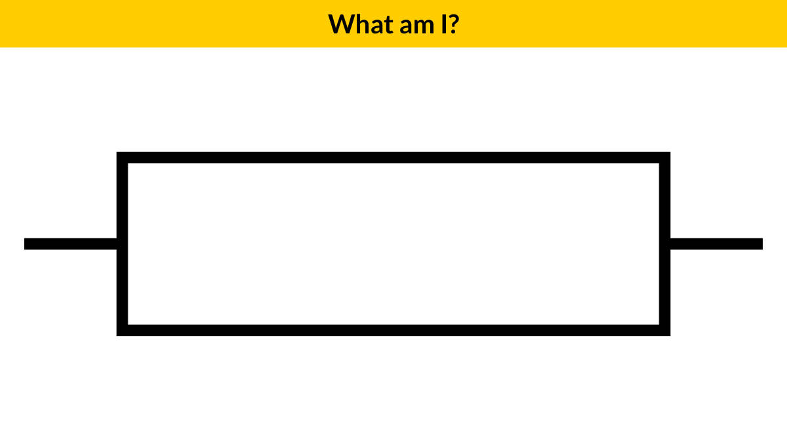
13쪽 · 나는 무엇일까?
이 쪽은 '나는 무엇일까?'라고 묻는 맞히기 질문이다.
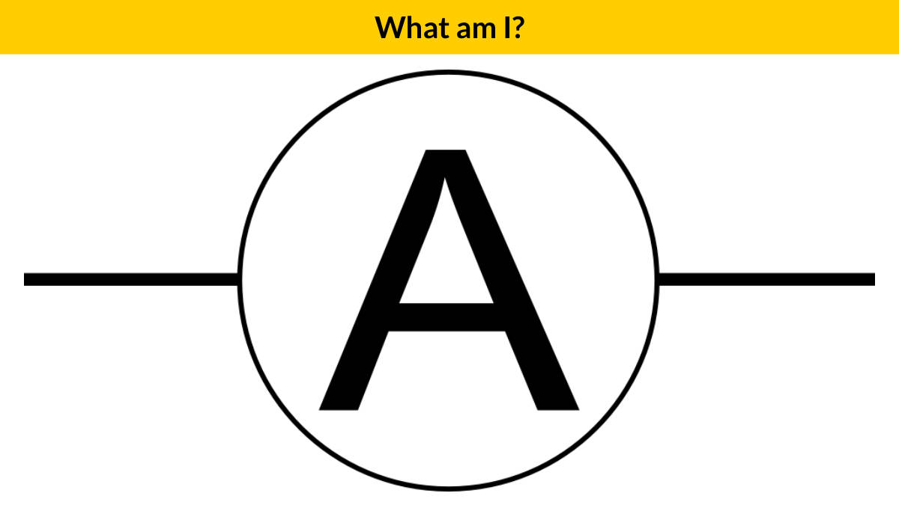
14쪽 · 나는 무엇일까?
이 쪽은 '나는 무엇일까?'라고 묻는 문제다.
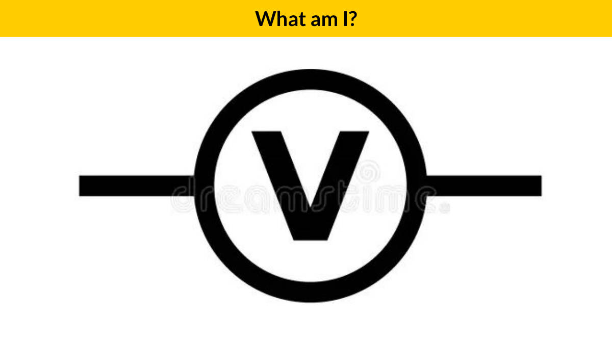
15쪽 · 나는 무엇일까?
이 쪽은 'What am I?(나는 무엇일까?)'라고 묻는 퀴즈 쪽이다.
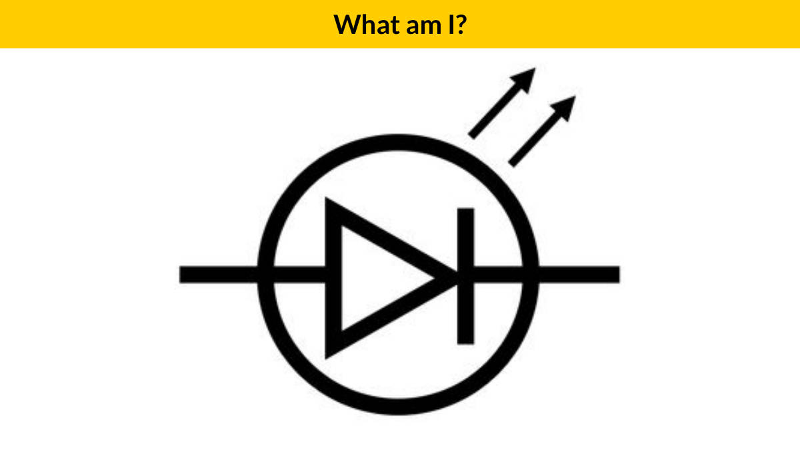
16쪽 · 나는 무엇일까?
이 쪽은 '나는 무엇일까?'라고 묻는 수수께끼 쪽이다.
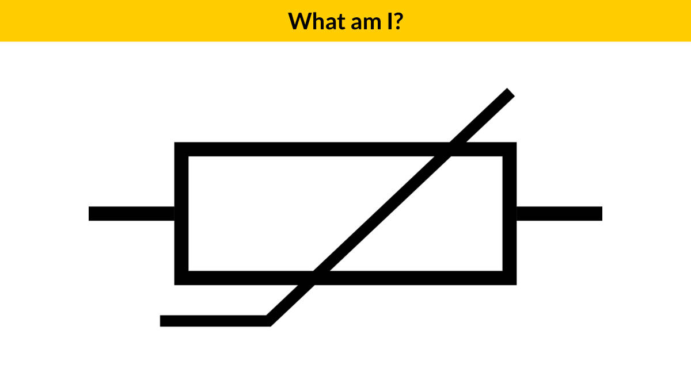
17쪽 · 나는 무엇일까?
이 쪽은 '나는 무엇일까?'라고 묻는 퀴즈 쪽이다.
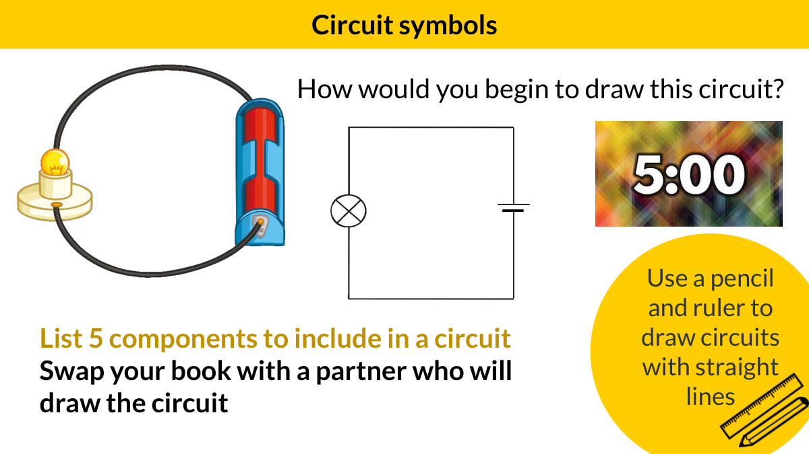
18쪽 · 회로 기호로 회로 그리기
회로는 연필과 자를 써서 곧은 선으로 그린다.
이 회로를 그리려면 무엇부터 시작하겠는가?
회로에 넣을 부품 5가지를 적어 보라.
짝과 책을 바꾸고, 짝이 그 회로를 그린다.
회로도는 연필과 자로 곧은 선을 그어 그린다.
회로를 그리기 전에 회로에 들어갈 부품 5가지를 먼저 적어 본다.
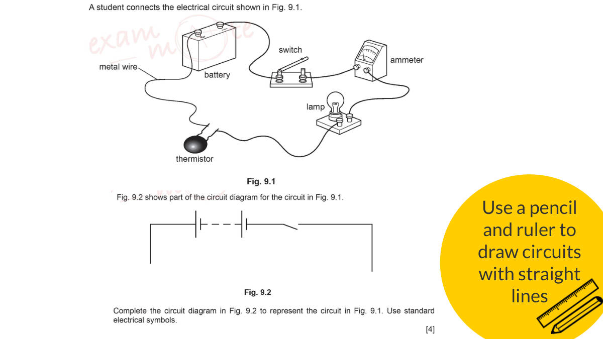
19쪽 · 회로도 그리는 법
회로도는 연필과 자로 그리고, 전선은 곧은 선으로 나타낸다.
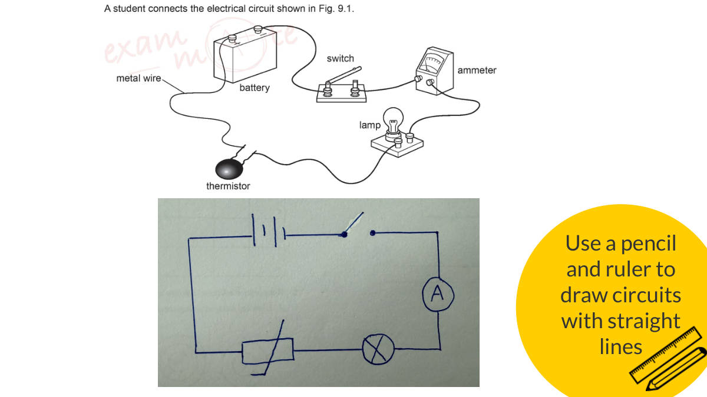
20쪽 · 회로도 그리는 방법
회로도는 연필과 자를 써서 곧은 선으로 그려야 한다.
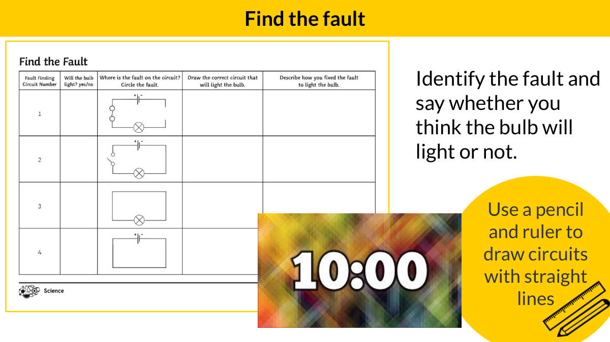
21쪽 · 고장 찾기
고장이 무엇인지 찾고, 전구에 불이 켜질지 안 켜질지 생각해서 말해 보아라.
연필과 자를 써서 회로를 곧은 선으로 그려라.
회로를 보고 어디가 잘못되었는지(고장) 찾아낸 뒤, 그 때문에 전구에 불이 켜지는지 안 켜지는지를 판단하는 연습이다.
회로를 그릴 때는 연필과 자를 써서 선을 곧게 긋는다.
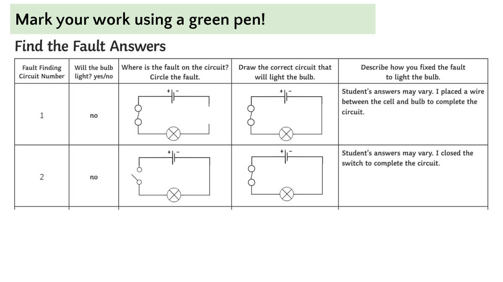
22쪽 · 초록 펜으로 채점하기
앞에서 푼 문제를 초록 펜으로 직접 채점하라는 안내다.
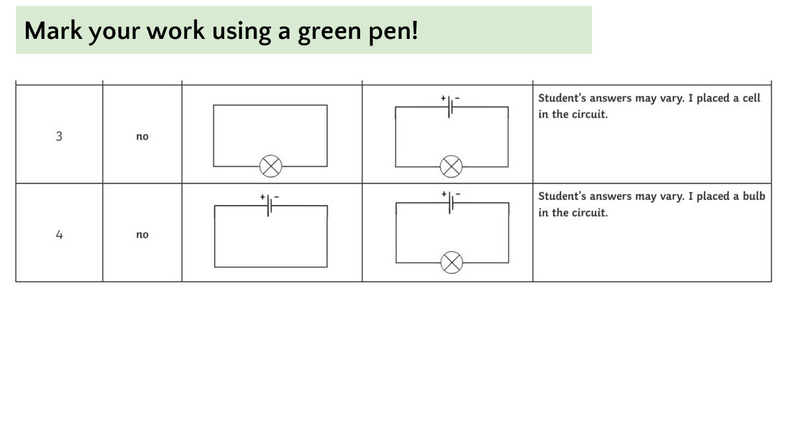
23쪽 · 초록 펜으로 채점하기
이 쪽은 앞에서 푼 문제의 답을 맞춰 보며 초록색 펜으로 직접 채점하는 쪽이다.
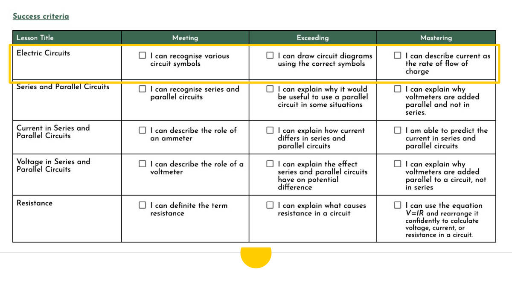
24쪽 · 9.1 기본 회로 · 24쪽
병렬 회로란
병렬 회로(parallel circuit)는 전기가 흐르는 길이 둘 이상으로 갈라지는 회로다.
전류는 갈림점(junction)에서 여러 갈래(branch)로 나뉘었다가 다시 합쳐져 전지로 돌아간다.
부품이 한 줄로만 이어진 직렬 회로(series circuit)와 비교해서 알아 두면 좋다.
전류(current)
병렬 회로에서는 전지에서 나온 전체 전류가 각 갈래로 나뉘어 흐른다.
그래서 각 갈래에 흐르는 전류를 모두 더하면 전체 전류와 같다.
전류는 전류계(ammeter)로 재고, 단위는 암페어(ampere, A)다.
전압(voltage)
병렬 회로에서는 각 갈래에 걸리는 전압이 전원(전지)의 전압과 같다.
전압은 전압계(voltmeter)로 재고, 단위는 볼트(volt, V)다. 전압계는 재려는 부품과 병렬로 연결한다.
병렬 회로의 장점
한 갈래의 전구가 끊어지거나 스위치가 꺼져도 다른 갈래에는 전류가 계속 흐른다.
그래서 다른 전구는 계속 켜져 있다. 집 안의 전기 배선이 병렬로 연결되어 있는 이유가 이것이다.
또 각 갈래에 스위치(switch)를 따로 달면 부품을 하나씩 따로 켜고 끌 수 있다.
회로 기호(circuit symbols)
병렬 회로는 회로도(circuit diagram)에서 전지(cell), 전구(lamp), 스위치(switch), 전류계, 전압계 같은 기호로 그린다.
갈래가 나뉘는 모양을 보고 병렬인지 직렬인지 구별할 수 있어야 한다.
✍️ 꼭 알아야 하는 것
- 병렬 회로(parallel circuit)에서 각 갈래의 전류를 더하면 전체 전류와 같고, 각 갈래의 전압은 전원 전압과 같다.
- 병렬 회로는 한 갈래가 끊어져도 다른 갈래의 부품은 계속 작동한다.
전원 — 전지(cell)와 배터리(battery)
전지(cell)는 회로에 전위차(potential difference)를 만들어 주는 근원(source)이다.
배터리(battery)는 전지 두 개 이상을 전기적으로 연결해 전위차를 공급하는 것이다.
그래서 전지 하나는 cell이고, 여러 개를 이어 붙이면 battery가 된다.
빛을 내는 부품 — 전구(lamp)
전구(lamp)는 전류(current)가 흐를 때 불이 켜진다.
스위치 — 열린 스위치(open switch)와 닫힌 스위치(closed switch)
열린 스위치(open switch)는 회로에 끊어진 곳(break)을 만들어 전류가 흐르지 못하게 한다.
닫힌 스위치(closed switch)는 회로를 완성(complete)해서 전류가 흐를 수 있게 한다.
열리면 끊기고, 닫히면 이어진다고 기억하면 된다.
안전 장치 — 퓨즈(fuse)
퓨즈(fuse)는 너무 많은 전류가 흐르면 안의 금속 선(metal wire)이 녹아서(melting) 회로를 끊는다.
전류가 지나치게 커지는 것을 막아 주는 부품이다.
저항 종류 — resistor, variable resistor, thermistor, LDR
저항(resistor)은 전류가 지나갈 때 정해진 크기의 저항(resistance)을 갖도록 만든 부품이다.
가변 저항(variable resistor)은 저항 값을 바꿀 수 있는 부품이다. 저항을 바꾸면 회로에 흐르는 전류의 양이 달라진다.
서미스터(thermistor)는 온도에 반응하는 저항이다. 뜨거워지면(heated) 저항이 줄어든다(reduces).
LDR(light dependent resistor)은 빛의 세기(light intensity)에 따라 저항이 달라지는 저항이다.
정리하면 thermistor는 온도, LDR은 빛에 따라 저항이 바뀐다.
한 방향 부품 — 다이오드(diode)와 LED
다이오드(diode)는 전류를 한 방향으로만(one direction only) 흐르게 한다.
LED(light emitting diode)는 전압(voltage)이 걸리면 빛을 내는 다이오드다.
즉 LED도 다이오드의 한 종류라서 빛을 내는 것 말고도 한 방향으로만 전류를 흘린다는 점이 같다.
측정기 — 전류계(ammeter)와 전압계(voltmeter)
전류계(ammeter)는 회로를 지나는 전류(current)를 암페어(amperes, A) 단위로 잰다.
전압계(voltmeter)는 부품 양쪽 사이(across a component)의 전위차(potential difference)를 볼트(volts, V) 단위로 잰다.
전류는 암페어, 전위차는 볼트로 짝지어 기억한다.
✍️ 꼭 알아야 하는 것
- thermistor는 뜨거워지면 저항이 줄고, LDR은 빛의 세기에 따라 저항이 바뀐다는 차이를 알아야 한다.
- ammeter는 전류를 암페어(A)로, voltmeter는 부품 양쪽 사이의 전위차를 볼트(V)로 잰다.
- cell과 battery(cell 두 개 이상), diode(한 방향으로만 전류가 흐름)와 LED(빛을 내는 diode)의 차이를 구별해야 한다.
📚 이 자료의 핵심 단어
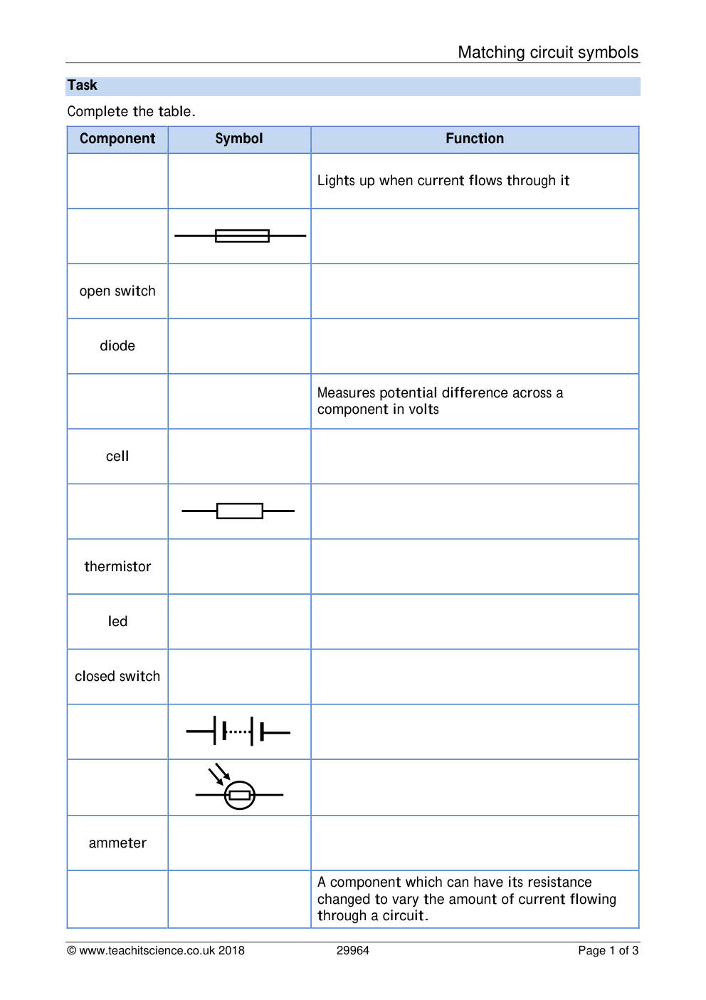
1쪽 · 회로 기호 짝짓기 표 채우기
과제: 표를 완성한다.
표의 칸은 부품, 기호, 기능이다.
기능: 전류가 흐르면 불이 켜진다.
부품: 열린 스위치
부품: 다이오드
기능: 부품 양쪽의 전위차를 볼트 단위로 잰다.
부품: 전지
부품: 서미스터
부품: LED
부품: 닫힌 스위치
부품: 전류계
기능: 저항을 바꿀 수 있어서 회로에 흐르는 전류의 양을 조절하는 부품이다.
표는 부품 이름, 회로 기호, 기능 세 칸으로 되어 있고, 비어 있는 칸을 채워 완성하는 과제다.
이 쪽에 나온 부품은 열린 스위치, 닫힌 스위치, 다이오드, 전지, 서미스터, LED, 전류계다.
전위차를 볼트 단위로 재는 것, 전류가 흐르면 불이 켜지는 것, 저항을 바꿔 전류의 양을 조절하는 것처럼 기능만 적힌 칸은 거기에 맞는 부품 이름을 찾아 넣어야 한다.
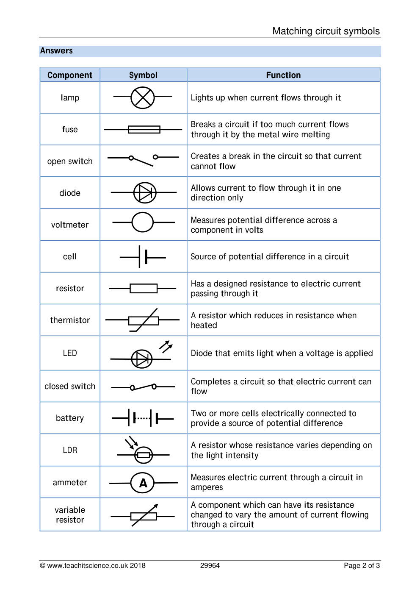
2쪽 · 회로 기호 짝짓기 정답
정답
부품 / 기호 / 기능
전구(lamp): 전류가 흐르면 불이 켜진다.
퓨즈(fuse): 전류가 너무 많이 흐르면 금속선이 녹아서 회로를 끊는다.
열린 스위치(open switch): 회로에 끊긴 곳을 만들어 전류가 흐르지 못하게 한다.
다이오드(diode): 전류를 한쪽 방향으로만 흐르게 한다.
전압계(voltmeter): 부품 양 끝의 전위차를 볼트(V) 단위로 잰다.
전지(cell): 회로에 전위차를 만들어 주는 원천이다.
저항(resistor): 지나가는 전류에 대해 정해진 크기의 저항을 가진다.
서미스터(thermistor): 열을 받으면 저항이 작아지는 저항이다.
LED: 전압을 걸면 빛을 내는 다이오드다.
닫힌 스위치(closed switch): 회로를 이어 주어 전류가 흐를 수 있게 한다.
배터리(battery): 전지 두 개 이상을 전기적으로 연결해 전위차의 원천으로 쓰는 것이다.
LDR: 빛의 세기에 따라 저항이 달라지는 저항이다.
전류계(ammeter): 회로에 흐르는 전류를 암페어(A) 단위로 잰다.
가변 저항(variable resistor): 저항을 바꿀 수 있어서 회로에 흐르는 전류의 양을 조절하는 부품이다.
전압계는 부품 양 끝의 전위차를 볼트(V)로 재고, 전류계는 회로에 흐르는 전류를 암페어(A)로 잰다.
서미스터는 열을 받으면 저항이 작아지고, LDR은 빛의 세기에 따라 저항이 달라진다.
다이오드는 전류를 한쪽 방향으로만 흐르게 하고, LED는 전압을 걸면 빛을 내는 다이오드다.
전지 두 개 이상을 연결한 것이 배터리다.
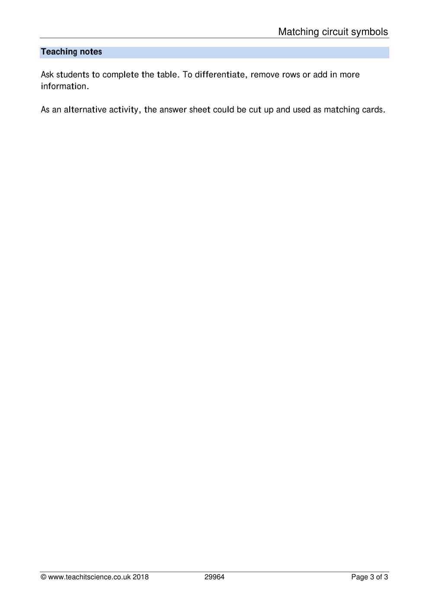
3쪽 · 회로 기호 짝짓기 – 지도 안내
3쪽 중 3쪽
지도 안내
학생들에게 표를 완성하게 한다.
수준을 다르게 하려면 줄을 빼거나 정보를 더 넣는다.
다른 활동으로, 정답지를 잘라서 짝짓기 카드로 쓸 수도 있다.
이 쪽은 선생님용 안내다. 앞쪽의 표를 채워 회로 기호와 이름을 짝짓는 활동이고, 정답지를 잘라 카드로 짝짓기 놀이를 할 수도 있다.
복습: 직렬회로의 전압
부품 두 개 이상을 한 줄로 이어 붙인 것을 직렬회로(series circuit)라고 한다.
직렬회로에서는 전원의 전체 전위차(potential difference), 즉 전압(voltage)을 부품들이 나누어 가진다(shared).
그래서 각 부품에 걸린 전압을 모두 더하면 전원의 전압과 같다. 예를 들어 3V 전지에 같은 전구 두 개를 직렬로 달면 3V = 1.5V + 1.5V가 된다.
전지(cell)를 더 많이 연결하면 전압이 커지고, 전구에 더 많은 에너지(energy)를 전달한다.
직렬회로 확인 문제
같은 전구 두 개가 직렬로 연결되어 있고, 한 전구에 걸린 전압 V2가 3.2V라고 하자.
전구가 같으므로 다른 전구의 V3도 3.2V다.
전지 전체에 걸린 V1은 두 값을 더한 6.4V다.
직렬회로에서는 각 부품에 걸린 전압을 더하면 전지에 걸린 전압이 되기 때문이다.
병렬회로란
전지에서 출발해 돌아오는 길(loop)이 두 개 이상인 회로를 병렬회로(parallel circuit)라고 한다.
길이 여러 갈래로 나뉘어 있어서 각 갈래를 가지(branch)라고 부른다.
전류가 두 길로 갈라지는 점과, 두 길의 전류가 다시 합쳐지는 점이 있는데, 이 점을 분기점(junction)이라고 한다.
모양이 달라도 같은 회로
회로 A, C, D는 모두 분기점에서 두 개의 따로 된 길로 나뉘고, 각 길에 전구(lamp)가 하나씩 있다.
전구 위치나 전선 모양이 달라 보여도 연결 방식이 같으므로 세 회로는 똑같이 작동하는 병렬회로다.
회로 B는 길이 하나뿐인 직렬회로라서 나머지와 다르다.
즉 회로를 비교할 때는 그림 모양이 아니라 몇 개의 길로 나뉘는지, 각 길에 무엇이 있는지를 봐야 한다.
병렬회로 회로도 그리기
병렬회로의 회로도(circuit diagram)는 길을 하나씩 차례로 그린다.
특히 모서리와 분기점에서 선이 끊긴 작은 틈이 없도록 한다. 틈이 있으면 회로가 이어지지 않은 것으로 보인다.
전선을 뜻하는 가로선과 세로선은 자(ruler)를 대고 곧게 그린다.
병렬회로의 전압 규칙
전구 하나와 저항(resistor) 하나가 각각 다른 가지에 병렬로 연결된 회로를 전압계(voltmeter)로 재면, 전구에 걸린 전압은 1.4V, 저항에 걸린 전압도 1.4V, 전지에 걸린 전압도 1.4V로 모두 같다.
규칙은 이렇다: 병렬회로에서 각 가지에 걸린 전압은 전지(cell)나 배터리(battery)에 걸린 전압과 같다.
직렬회로처럼 전압을 나누어 갖는 것이 아니라, 가지마다 전원의 전압이 그대로 걸린다. 예를 들어 3V 전지에 연결된 병렬회로라면 전지와 각 가지 모두 3V다.
전구 수가 달라도 가지 전압은 같다
같은 전구들로 만든 병렬회로에서 한 가지에는 전구가 하나, 다른 가지에는 전구가 두 개 있다고 하자.
그래도 전구 하나짜리 가지에 걸린 전압과 전구 두 개짜리 가지에 걸린 전압은 같다.
가지 안에 무엇이 몇 개 있든, 가지 전체에 걸린 전압은 전지의 전압과 같기 때문이다.
병렬회로 확인 문제
전지의 전압이 2.0V인 병렬회로에서 전구와 저항이 각각 다른 가지에 있으면, 전구에 걸린 전압은 2.0V, 저항에 걸린 전압도 2.0V다.
전압계 세 개 중 V3가 1.4V를 가리키면 V1과 V2도 모두 1.4V를 가리킨다. 병렬회로에서는 각 가지에 걸린 전압이 같기 때문이다.
전선에 전압계를 대면 0V
전압을 재려면 전압계를 저항(resistance)이 있는 부품의 양쪽 끝에 걸쳐(across) 연결해야 한다.
연결 전선(leads)은 저항이 0이라서, 전선 양 끝에 전압계를 대면 0.0V가 나온다.
그래서 3V 회로에서 부품에 댄 전압계는 3.0V를 가리키고, 전선에만 댄 전압계는 0.0V를 가리킨다.
실험: 직렬과 병렬에서 전구 밝기
전구를 직렬로 연결했을 때와 병렬로 연결했을 때 밝기(brightness)가 어떻게 달라지는지 관찰하는 실험이다.
이때 전구에 걸린 전위차(potential difference)와 전구를 지나는 전류(current)도 함께 측정해 두 회로를 비교한다.
✍️ 꼭 알아야 하는 것
- 병렬회로에서 각 가지(branch)에 걸린 전압은 전지(cell)·배터리(battery)의 전압과 같다. 직렬회로에서는 각 부품의 전압을 더하면 전원 전압이 된다.
- 병렬회로는 전지에서 나가는 길(loop)이 두 개 이상이고, 전류가 갈라지고 합쳐지는 분기점(junction)이 있다.
- 전압계(voltmeter)는 저항이 있는 부품 양쪽에 걸쳐 연결한다. 저항이 0인 전선 양 끝에 대면 0V가 나온다.
📚 이 자료의 핵심 단어
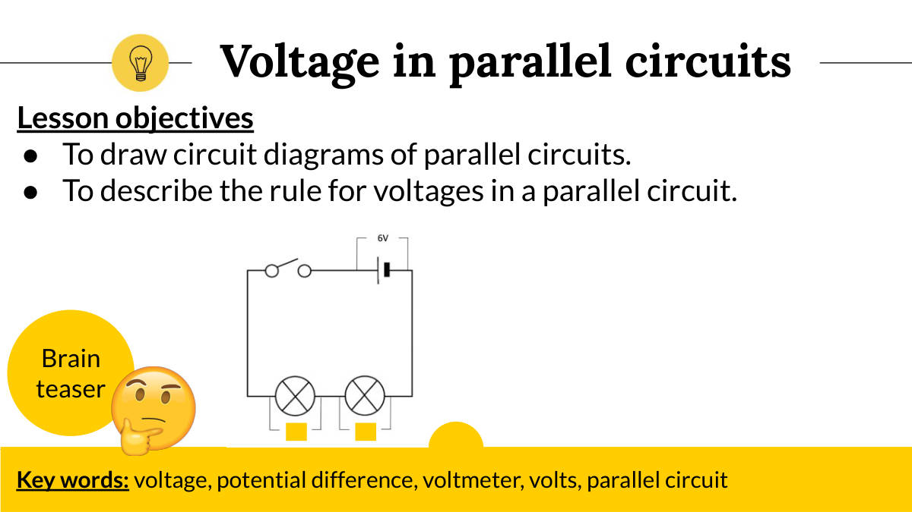
1쪽 · 병렬회로의 전압
핵심 낱말: 전압, 전위차, 전압계, 볼트, 병렬회로
학습 목표
병렬회로의 회로도를 그릴 수 있다.
병렬회로에서 전압의 규칙을 설명할 수 있다.
병렬회로의 전압
이 단원에서는 병렬회로의 회로도를 그리는 법과 병렬회로에서 전압이 어떤 규칙을 따르는지를 배운다.
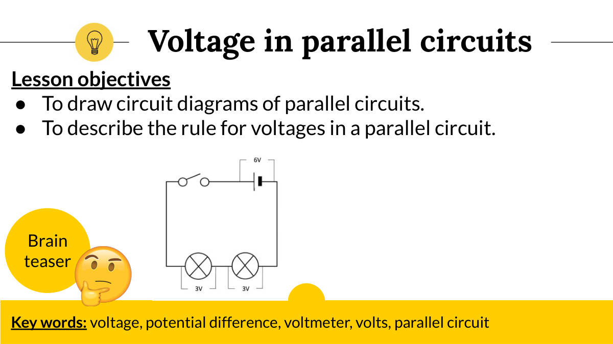
2쪽 · 병렬회로의 전압
핵심 낱말: 전압, 전위차, 전압계, 볼트, 병렬회로
학습 목표
병렬회로의 회로도를 그린다.
병렬회로에서 전압의 규칙을 설명한다.
병렬회로의 전압
이 단원의 목표는 병렬회로의 회로도를 그리고, 병렬회로에서 전압이 어떤 규칙을 따르는지 설명하는 것이다.
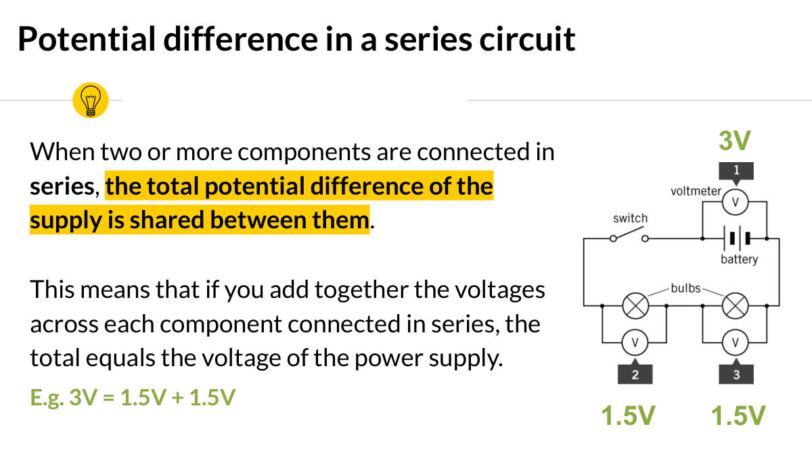
3쪽 · 직렬회로의 전위차
두 개 이상의 부품이 직렬로 연결되면, 전원의 전체 전위차는 부품들이 나누어 가진다.
이것은 직렬로 연결된 각 부품에 걸린 전압을 모두 더하면, 그 합이 전원의 전압과 같다는 뜻이다.
예: 3V = 1.5V + 1.5V
직렬회로에서는 전원의 전체 전압이 각 부품에 나뉘어 걸린다.
직렬로 연결된 각 부품의 전압을 모두 더하면 전원 전압과 같다(예: 3V = 1.5V + 1.5V).
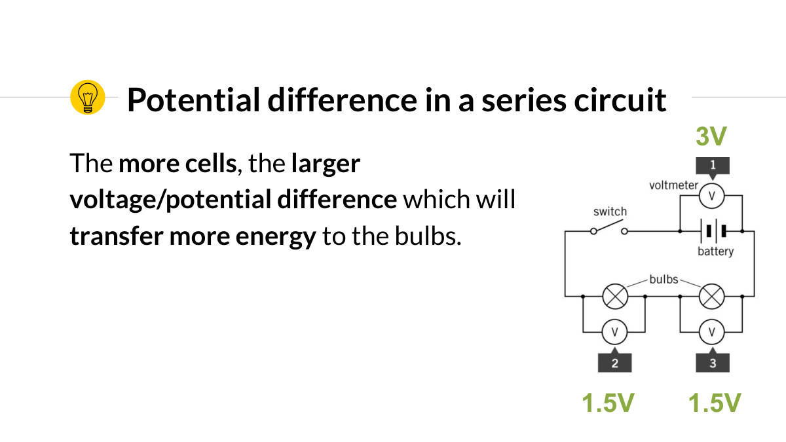
4쪽 · 직렬회로의 전위차
3V
1.5V
1.5V
직렬회로의 전위차
직렬회로에서 전지를 더 연결하면 전압이 커진다. 1.5V 전지 두 개를 직렬로 연결하면 1.5V + 1.5V = 3V가 되고, 전구에 더 많은 에너지가 전달된다.
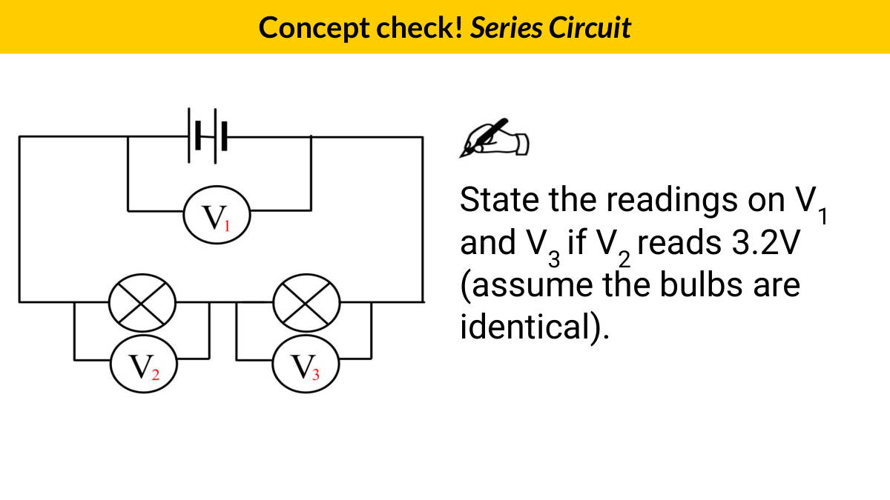
5쪽 · 개념 확인: 직렬회로 전압 읽기
V2가 3.2V를 가리킬 때 V1과 V3의 눈금을 적어라.
(전구들은 모두 똑같다고 가정한다.)
직렬회로에서 똑같은 전구들은 전원 전압을 똑같이 나눠 가진다.
전압계가 어디에 연결되어 있는지(전구 하나인지, 전원 전체인지)를 그림에서 먼저 확인하고 답을 정한다.
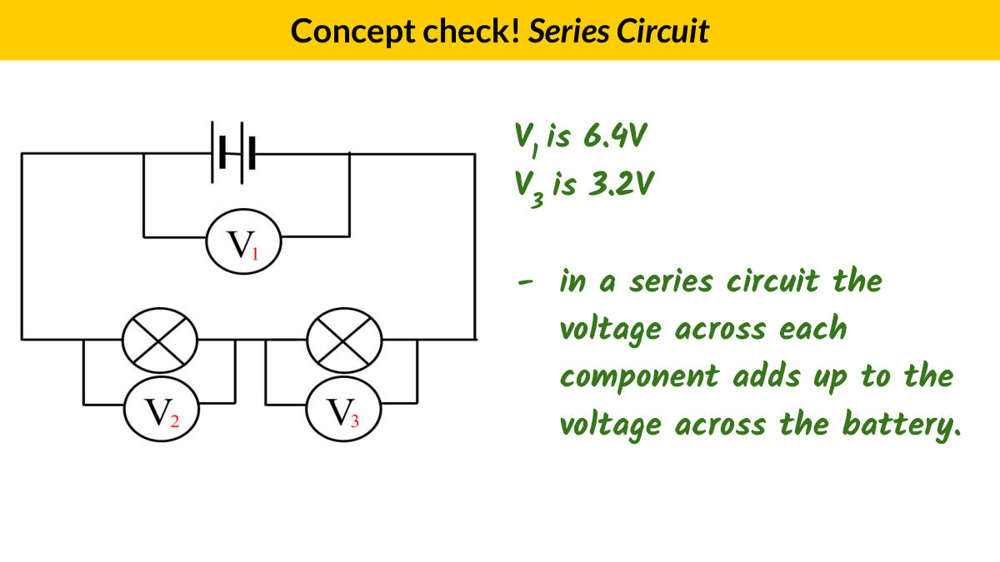
6쪽 · 개념 확인: 직렬회로의 전압
V1은 6.4V이다.
V3는 3.2V이다.
직렬회로에서는 각 부품에 걸리는 전압을 모두 더하면 전지에 걸리는 전압과 같다.
직렬회로에서는 각 부품에 걸리는 전압을 모두 더하면 전지 전압과 같다.
그래서 전지 전압에서 나머지 부품의 전압을 빼면 모르는 전압을 구할 수 있다.
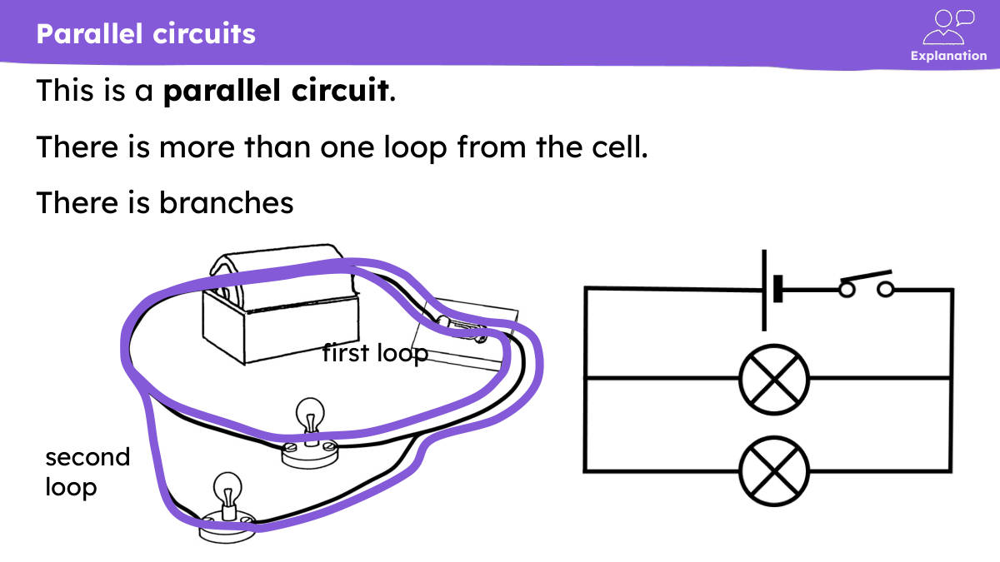
7쪽 · 병렬회로란 무엇인가
이것은 병렬회로이다.
전지에서 나가는 고리(회로 경로)가 하나보다 많다.
갈래(가지)가 있다.
병렬회로
첫 번째 고리
두 번째 고리
병렬회로는 전지에서 나가는 고리가 둘 이상이고, 전류가 갈래로 나뉘어 흐르는 회로이다.
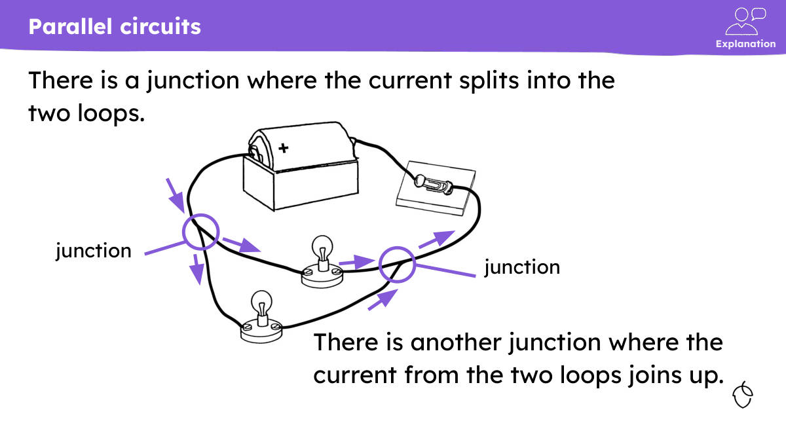
8쪽 · 병렬회로의 갈림점(접합점)
전류가 두 고리로 나뉘는 접합점(junction)이 있다.
두 고리에서 온 전류가 다시 합쳐지는 또 다른 접합점이 있다.
병렬회로에는 접합점이 두 곳 있다. 한 곳에서는 전류가 두 고리로 나뉘고, 다른 한 곳에서는 두 고리의 전류가 다시 합쳐진다.
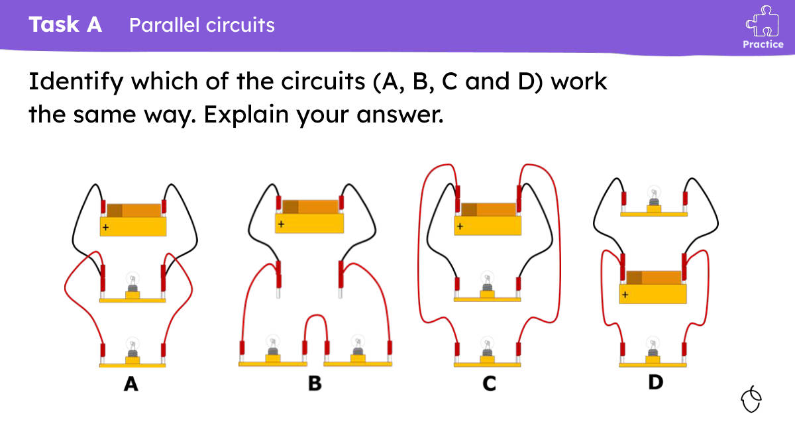
9쪽 · 연습: 같은 방식으로 작동하는 회로 찾기
과제 A
회로 A, B, C, D 가운데 같은 방식으로 작동하는 회로를 찾아라.
그렇게 답한 까닭을 설명해라.
병렬 회로
과제 A는 병렬 회로 A~D 가운데 같은 방식으로 작동하는 것을 고르고, 그렇게 고른 까닭을 설명하는 문제다.
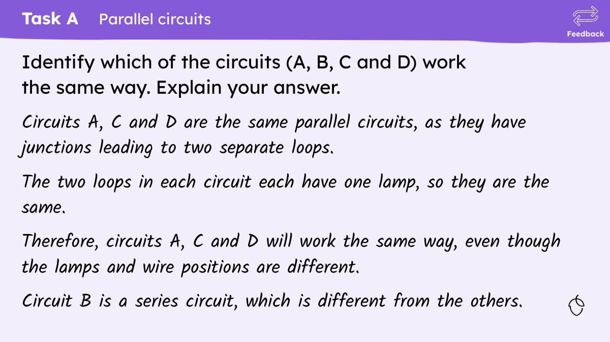
10쪽 · 과제 A 피드백: 병렬회로 구별하기
과제 A
병렬회로
회로 A, B, C, D 중 어떤 회로들이 같은 방식으로 작동하는지 찾아라. 답을 설명하라.
회로 A, C, D는 같은 병렬회로이다. 두 개의 따로 떨어진 고리로 이어지는 갈림점이 있기 때문이다.
각 회로의 두 고리에는 전구가 하나씩 있으므로 서로 같다.
그러므로 회로 A, C, D는 전구와 전선의 위치가 달라도 같은 방식으로 작동한다.
회로 B는 직렬회로이므로 다른 회로들과 다르다.
병렬회로는 갈림점에서 전선이 나뉘어 따로 떨어진 고리가 두 개 이상 생기는 회로이다. 이렇게 고리가 나뉘지 않는 회로는 직렬회로이다.
회로가 같은 방식으로 작동하는지는 전구나 전선이 놓인 자리로 판단하지 않는다. 갈림점과 고리가 어떻게 이어져 있는지, 고리마다 전구가 몇 개 있는지로 판단한다.
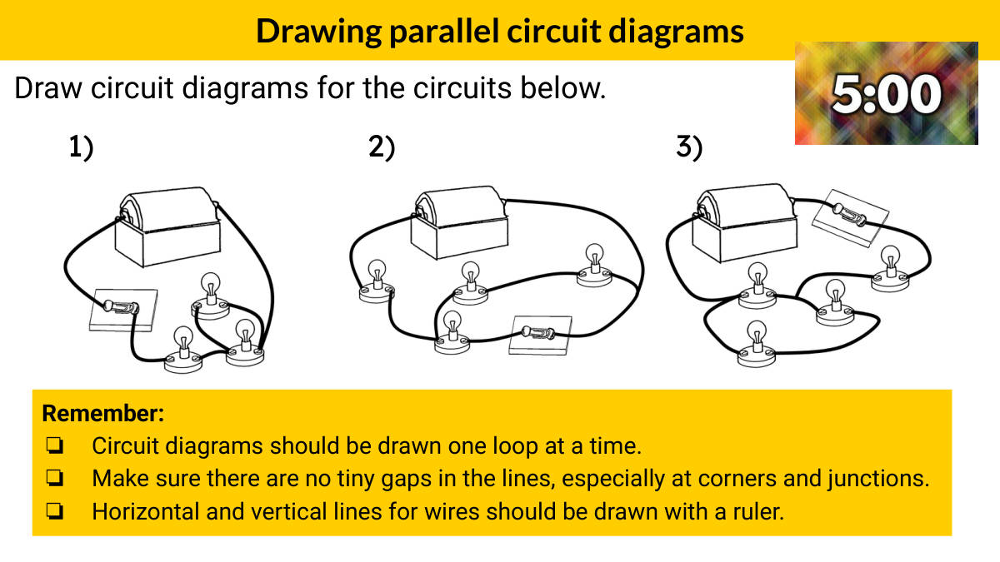
11쪽 · 병렬 회로도 그리기
아래 회로들의 회로도를 그려라.
1)
2)
3)
기억할 것:
회로도는 고리(loop) 하나씩 차례로 그려야 한다.
선에 작은 틈이 없게 하고, 특히 모서리와 갈림점(junction)을 잘 확인한다.
전선을 나타내는 가로선과 세로선은 자를 대고 그린다.
병렬 회로도는 고리 하나씩 나눠 그리고, 모서리와 갈림점에서 선이 끊기지 않게 이어야 한다.
전선은 자를 대고 가로선과 세로선으로 반듯하게 그린다.
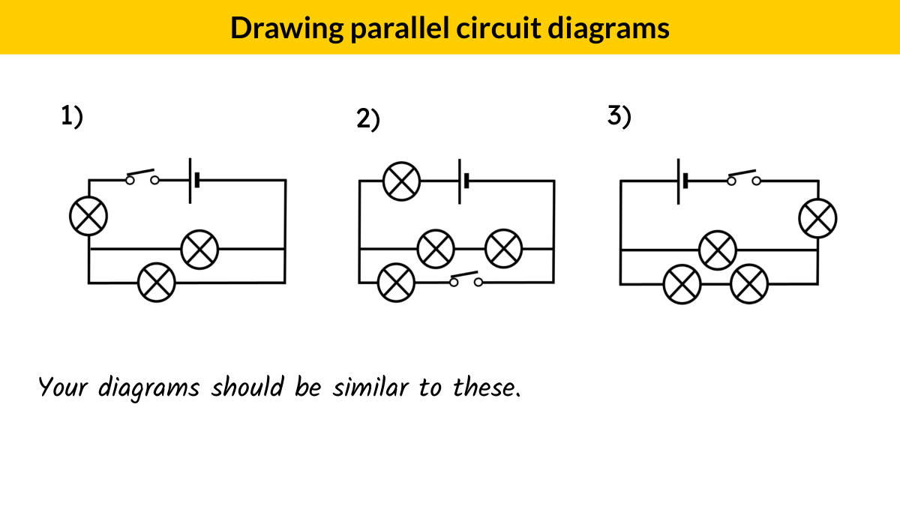
12쪽 · 병렬 회로도 그리기
여러분의 회로도는 이것들과 비슷해야 한다.
이 쪽에 나온 1)~3)번 회로도와 비슷하게 자신의 병렬 회로도를 그렸는지 맞춰 본다.
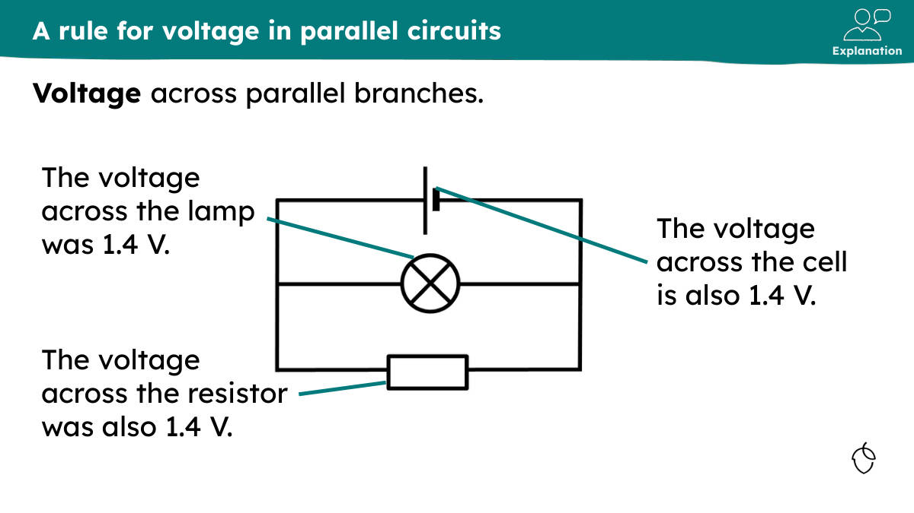
13쪽 · 병렬 회로의 전압 규칙
병렬 갈래에 걸리는 전압.
병렬 회로에서 전압에 대한 규칙
전구에 걸린 전압은 1.4 V였다.
저항에 걸린 전압도 1.4 V였다.
전지에 걸린 전압도 1.4 V이다.
병렬 회로에서는 전구에 걸린 전압, 저항에 걸린 전압, 전지에 걸린 전압이 모두 1.4 V로 같다.
병렬 회로의 각 갈래에 걸리는 전압은 전지의 전압과 같다는 규칙을 이 쪽에서 보여 준다.
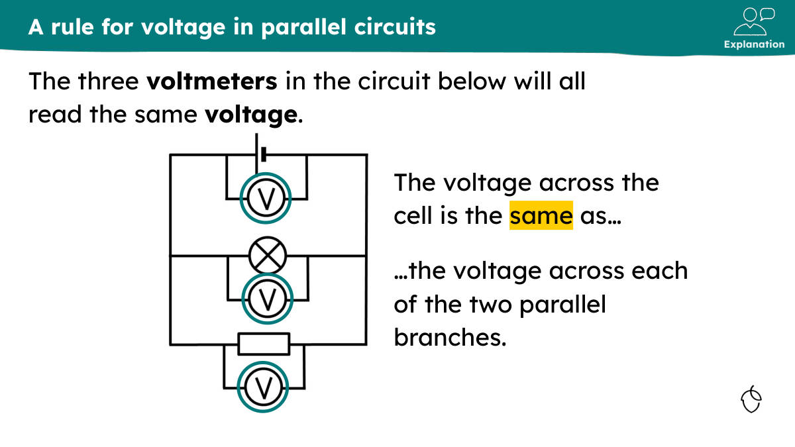
14쪽 · 병렬 회로의 전압 규칙
아래 회로에 있는 세 개의 전압계는 모두 같은 전압을 가리킨다.
병렬 회로의 전압에 관한 규칙
전지 양쪽의 전압은…
…두 병렬 갈래 각각의 양쪽 전압과 같다.
병렬 회로에서는 전지의 전압과 각 병렬 갈래에 걸리는 전압이 모두 같다.
그래서 전지와 각 갈래에 연결한 세 전압계는 모두 같은 값을 가리킨다.
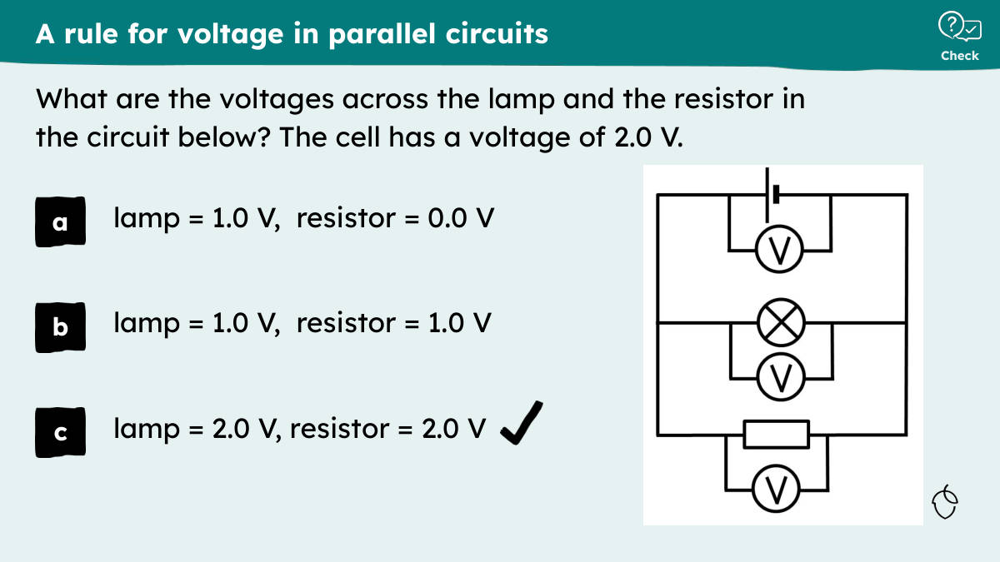
15쪽 · 병렬회로 전압 규칙 확인 문제
아래 회로에서 전구와 저항에 걸리는 전압은 각각 얼마인가?
전지의 전압은 2.0 V이다.
병렬회로에서 전압에 관한 규칙
a. 전구 = 1.0 V, 저항 = 0.0 V
b. 전구 = 1.0 V, 저항 = 1.0 V
c. 전구 = 2.0 V, 저항 = 2.0 V
이 쪽은 전지 전압이 2.0 V인 병렬회로에서 전구와 저항에 걸리는 전압을 a, b, c 가운데 고르는 확인 문제다.
병렬회로에서 전압이 어떻게 걸리는지에 관한 규칙을 떠올려 답을 고르는 문제다.
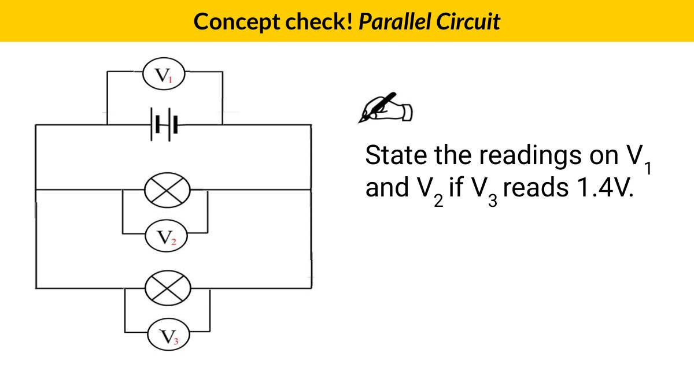
16쪽 · 개념 확인: 병렬회로의 전압
V3가 1.4V를 가리킬 때 V1과 V2의 눈금 값을 쓰라.
V3의 값(1.4V)을 바탕으로 병렬로 이어진 V1과 V2가 각각 몇 V를 가리키는지 구하는 문제다.
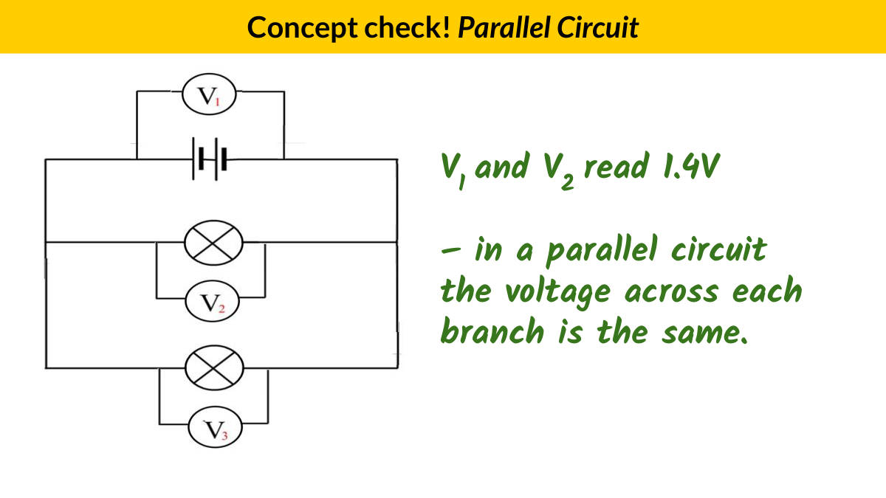
17쪽 · 개념 확인: 병렬회로의 전압
V1과 V2는 모두 1.4V를 가리킨다.
병렬회로에서는 각 갈래(branch)에 걸리는 전압이 모두 같다.
병렬회로에서는 각 갈래에 걸리는 전압이 같으므로, 전압계 V1과 V2는 똑같이 1.4V를 가리킨다.
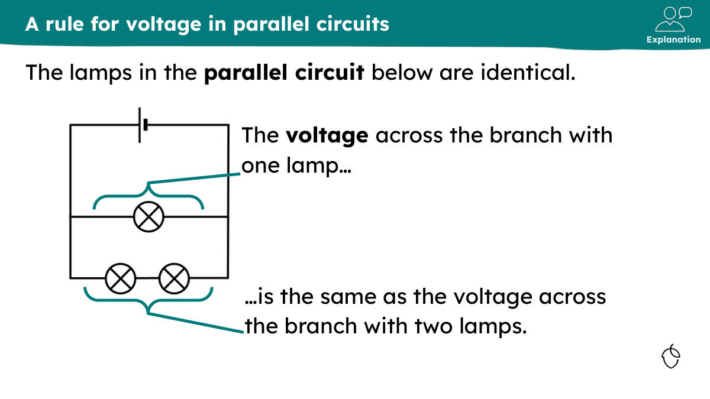
18쪽 · 병렬회로의 전압 규칙
아래 병렬회로의 전구들은 모두 똑같다.
병렬회로에서 전압에 대한 규칙
전구가 한 개 있는 가지에 걸리는 전압은…
…전구가 두 개 있는 가지에 걸리는 전압과 같다.
병렬회로에서는 가지마다 전구 수가 달라도 각 가지에 걸리는 전압이 같다.
그림의 전구들은 모두 똑같은 전구다.
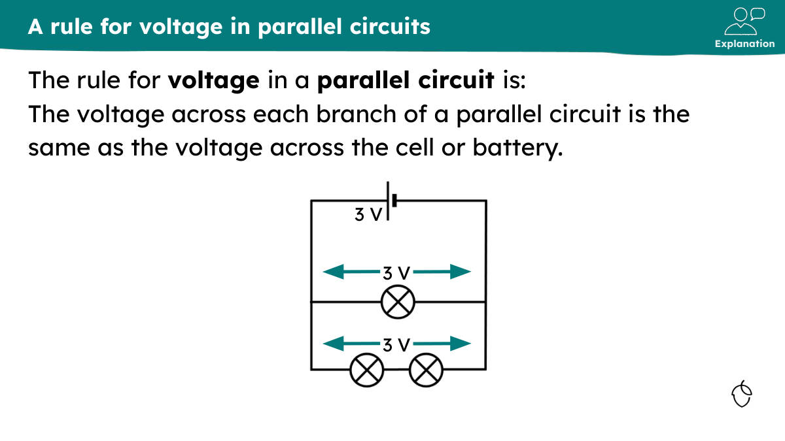
19쪽 · 병렬회로 전압 규칙
병렬회로에서 전압의 규칙은 다음과 같다.
병렬회로의 전압 규칙
3 V, 3 V, 3 V
병렬회로의 각 갈래(branch)에 걸리는 전압은 전지나 배터리에 걸리는 전압과 같다.
병렬회로에서는 모든 갈래에 걸리는 전압이 전지의 전압과 똑같다. 그림처럼 전지가 3 V이면 각 갈래에도 3 V씩 걸린다.
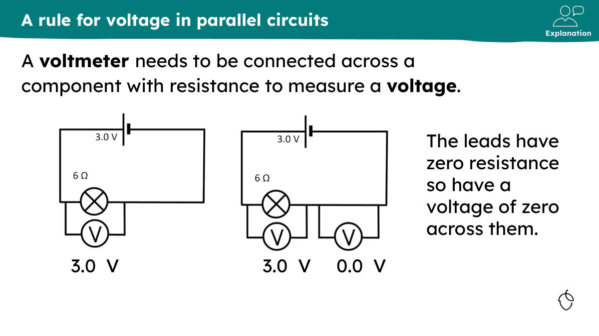
20쪽 · 병렬회로 전압 규칙: 도선 전압은 0
전압을 재려면 전압계를 저항이 있는 부품의 양 끝에 병렬로 연결해야 한다.
병렬회로의 전압 규칙이다.
3.0 V
3.0 V
0.0 V
도선은 저항이 0이므로 도선 양 끝의 전압도 0이다.
전압계는 저항이 있는 부품의 양 끝에 연결해야 전압을 잴 수 있다. 그림에서는 부품 양 끝이 3.0 V로 나온다.
도선은 저항이 0이어서 도선 양 끝에 전압계를 대면 0.0 V가 나온다.
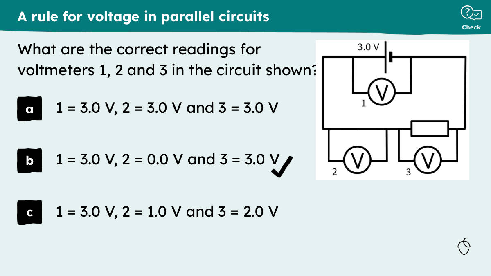
21쪽 · 확인 문제: 병렬회로의 전압
그림의 회로에서 전압계 1, 2, 3의 올바른 눈금은 무엇인가?
a. 1 = 3.0 V, 2 = 3.0 V, 3 = 3.0 V
b. 1 = 3.0 V, 2 = 0.0 V, 3 = 3.0 V
c. 1 = 3.0 V, 2 = 1.0 V, 3 = 2.0 V
병렬회로의 전압 규칙
이 쪽은 병렬회로의 전압 규칙을 써서 전압계 1, 2, 3의 눈금을 고르는 확인 문제이다.
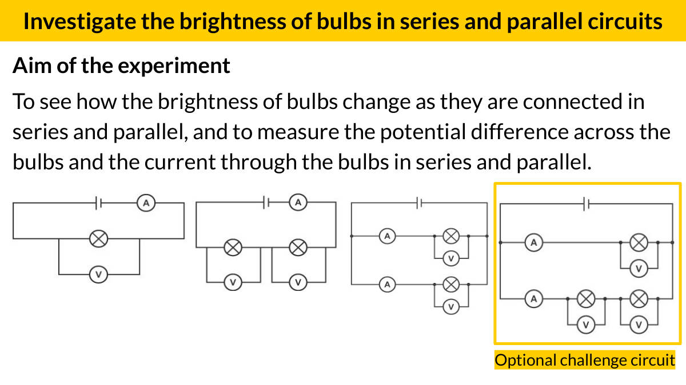
22쪽 · 직렬·병렬 회로의 전구 밝기 실험
실험 목적
전구를 직렬과 병렬로 연결할 때 밝기가 어떻게 달라지는지 보고, 직렬과 병렬에서 전구에 걸리는 전위차와 전구에 흐르는 전류를 잰다.
선택 도전 회로
이 실험은 전구를 직렬로 연결할 때와 병렬로 연결할 때 밝기가 어떻게 다른지 비교하고, 그때마다 전구에 걸리는 전위차와 전구에 흐르는 전류를 함께 재는 실험이다.
전위차는 전압이라고도 부르며, 이 단원(P1.3)은 병렬 회로의 전압을 다룬다.
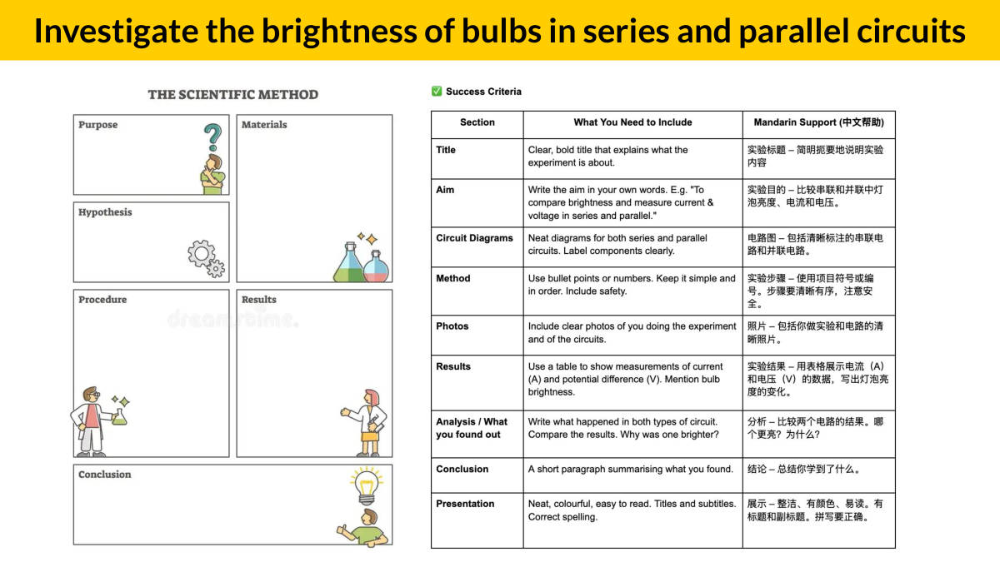
23쪽 · 전구 밝기 비교 실험
직렬 회로와 병렬 회로에 전구를 연결했을 때 전구의 밝기가 어떻게 다른지 비교하는 실험 활동이다.
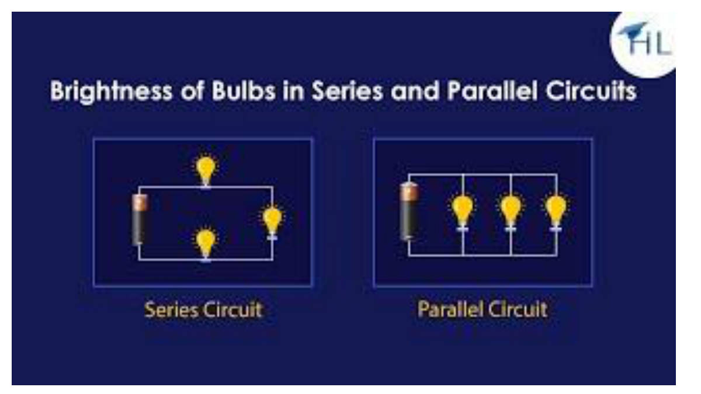
24쪽 · 병렬회로의 전압 · 마지막 쪽
제세동기(defibrillator) — 심장의 전기 활동이 완전히 흐트러지면 피가 펌프질되지 않는다. 이 상태를 심실세동(ventricular fibrillation)이라고 한다.
제세동기는 이때 심장에 전기 충격(electric shock)을 주어 다시 규칙적인 심장박동(regular heartbeat)이 되도록 돌려놓는 기계다.
제세동기 안전 — 충격을 주기 전에 가슴을 말려야 한다(dry chest). 가슴이 젖어 있으면 전기가 심장으로 가지 않고 피부 표면(surface of the skin)을 따라 흘러가 버리기 때문이다. 가슴을 말리는 것은 안전을 위한 것이기도 하다.
패들 손잡이는 플라스틱(plastic)으로 되어 있다. 플라스틱은 절연체(insulator)라서 전기가 통하지 않으므로, 기계를 잡은 사람이 감전되지 않는다.
몸도 회로가 된다 — 사람의 몸은 전기를 통한다(conducts electricity). 그래서 두 개의 패들(paddles) 사이를 몸이 이어 주어 회로(circuit)가 완성되고, 그 길을 따라 심장에 충격이 전달된다.
전구의 역사 — 필라멘트 재료 — 처음에 쓴 백금(platinum) 필라멘트는 너무 비쌌다(too expensive).
스완(Swan)은 필라멘트 재료로 탄소(carbon)를 썼다.
나중에는 탄소 대신 텅스텐(tungsten)을 쓰게 되었다. 텅스텐은 약 2,500°C의 높은 온도에서도 녹지 않고 견딜 수 있기(withstand high temperatures without melting) 때문이다.
진공 펌프(vacuum pump) — 전구 안의 산소(oxygen)를 빼내기 위해 쓴다. 산소가 남아 있으면 뜨거워진 필라멘트가 타 버린다(burn up).
에디슨과 스완 비교 — 스완(Swan)은 차근차근 계획을 세우는 과학적인 방법(methodical, scientific approach)으로 연구했다.
에디슨(Edison)은 이것저것 해 보며 고쳐 나가는 시행착오(trial and error)에 기댔다.
전류(electric current) — 회로를 따라 음전하(negative charge)가 흐르는 것이다.
전지(battery)는 전하에 에너지(energy)를 주고, 전하를 회로 속으로 밀어 준다(push).
전기는 다 써서 없어지지 않는다 — 전하는 전구를 지나도 사라지지 않는다(electricity is not used up). 전하는 전구에 에너지를 넘겨주고(transfer energy), 계속 움직여 다시 전지로 돌아간다. 없어지는 것은 전하가 아니라 전하가 가진 에너지다.
전류 재는 법 — 전류는 전류계(ammeter)로 재고, 단위는 암페어(amps, A)다.
직렬회로(series circuit) — 전구를 하나의 길에 줄줄이 연결한 회로다. 전구를 더 달면 저항(resistance)이 커진다. 그러면 전류가 줄어들고(current decreases) 전구가 어두워진다(dim).
직렬에서는 부품들이 전류와 에너지를 나누어 쓴다(share).
병렬회로(parallel circuit) — 길이 여러 갈래(branch)로 나뉜 회로다. 각 갈래는 같은 전류(same current)와 같은 전위차(same potential difference)를 받는다.
그래서 병렬로 연결한 전구들은 전구 하나만 달았을 때와 똑같이 밝다(just as bright as a single bulb). 직렬에서 전구가 늘수록 어두워지는 것과 다른 점이다.
전력망(National Grid)과 수요 — 전기는 대규모로 저장할 수 없다(cannot be stored on a large scale). 그래서 공급(supply)을 그 순간의 수요(demand)에 실시간(real-time)으로 맞춰야 한다.
수요가 갑자기 치솟는 때(spike)도 있다. TV 광고 시간(commercial breaks)에 사람들이 한꺼번에 차를 끓이거나, 날씨(weather)가 나빠지거나 어두워질(darkness) 때다.
그래서 전력망은 TV 편성표(TV schedules)와 날씨로 수요를 예측해서(predicting demand), 필요할 때 발전소(power stations)를 더 가동한다.
✍️ 꼭 알아야 하는 것
- 직렬회로(series)는 전구를 더 달면 저항이 커져 전류가 줄고 전구가 어두워지며, 병렬회로(parallel)는 각 갈래가 같은 전류와 전위차를 받아 전구가 하나일 때만큼 밝다.
- 전류(electric current)는 음전하(negative charge)의 흐름이고 전류계(ammeter)로 재며 단위는 암페어(amps)다. 전하는 없어지지 않고 에너지만 전구에 넘겨준다.
- 텅스텐(tungsten)은 높은 온도에서도 녹지 않아 탄소를 대신했고, 진공 펌프(vacuum pump)는 필라멘트가 타지 않게 산소를 빼낸다.
📚 이 자료의 핵심 단어
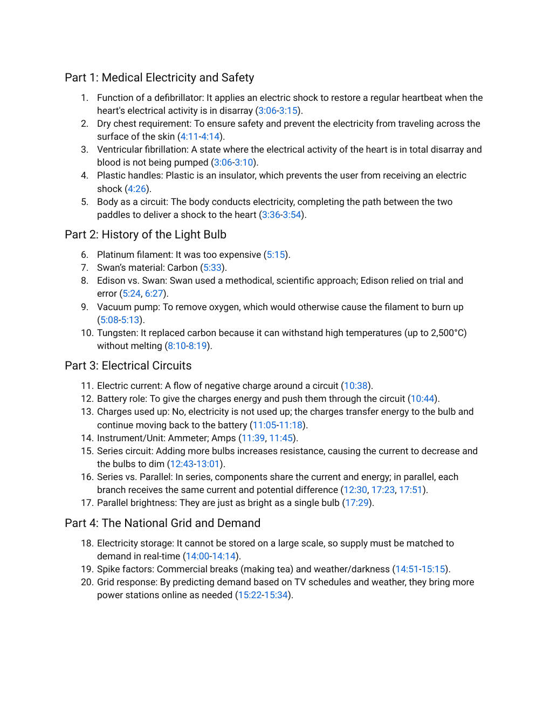
1쪽 · 전기 영상 정답: 의료·전구·회로·전력망
1. 제세동기의 기능: 심장의 전기 활동이 엉망이 되었을 때 전기 충격을 주어 규칙적인 심장 박동을 되찾게 한다(3:06-3:15).
2. 가슴이 말라 있어야 하는 이유: 안전을 위해서이고, 전기가 피부 표면을 따라 흐르는 것을 막기 위해서다(4:11-4:14).
3. 심실세동: 심장의 전기 활동이 완전히 엉망이 되어 피가 펌프질되지 않는 상태다(3:06-3:10).
4. 플라스틱 손잡이: 플라스틱은 절연체라서 사용하는 사람이 전기 충격을 받지 않게 막아 준다(4:26).
5. 회로가 되는 몸: 몸은 전기를 전도하므로 두 패들 사이의 길을 이어 주어 심장에 충격이 전달된다(3:36-3:54).
2부: 전구의 역사
6. 백금 필라멘트: 너무 비쌌다(5:15).
7. 스완이 쓴 재료: 탄소다(5:33).
8. 에디슨과 스완: 스완은 체계적이고 과학적인 방법을 썼고, 에디슨은 시행착오에 의지했다(5:24, 6:27).
9. 진공 펌프: 산소를 없애기 위해서다. 산소가 있으면 필라멘트가 타 버린다(5:08-5:13).
10. 텅스텐: 녹지 않고 높은 온도(최대 2,500°C)를 견딜 수 있어서 탄소를 대신하게 되었다(8:10-8:19).
3부: 전기 회로
11. 전류: 회로를 따라 도는 음전하의 흐름이다(10:38).
12. 전지의 역할: 전하에 에너지를 주고 전하를 회로로 밀어 보낸다(10:44).
13. 전하는 다 써서 없어지는가: 아니다. 전기는 써서 없어지지 않는다. 전하는 전구에 에너지를 넘겨주고 계속 움직여 전지로 돌아간다(11:05-11:18).
14. 측정 기구와 단위: 전류계, 암페어(A)다(11:39, 11:45).
15. 직렬 회로: 전구를 더 달면 저항이 커져서 전류가 줄고 전구가 어두워진다(12:43-13:01).
16. 직렬과 병렬: 직렬에서는 부품들이 전류와 에너지를 나눠 가진다. 병렬에서는 각 갈래가 같은 전류와 같은 전위차를 받는다(12:30, 17:23, 17:51).
17. 병렬 전구의 밝기: 전구 하나만 있을 때와 똑같이 밝다(17:29).
4부: 국가 전력망과 수요
18. 전기 저장: 전기는 대규모로 저장할 수 없어서 공급을 실시간으로 수요에 맞춰야 한다(14:00-14:14).
19. 수요가 갑자기 치솟는 요인: TV 광고 시간(차를 끓임)과 날씨·어두워짐이다(14:51-15:15).
20. 전력망의 대응: TV 편성표와 날씨로 수요를 예측해 필요할 때 발전소를 더 가동한다(15:22-15:34).
제세동기는 몸이 전기를 전도해 두 패들 사이 회로를 완성하는 원리로 심장에 충격을 주고, 플라스틱 손잡이(절연체)와 마른 가슴이 안전을 지킨다.
전구 필라멘트는 백금(비쌈)에서 탄소, 다시 높은 온도를 견디는 텅스텐으로 바뀌었고, 진공 펌프로 산소를 없애 필라멘트가 타지 않게 했다.
전류는 음전하의 흐름이고 전류계로 재며 단위는 암페어다. 전하는 써서 없어지지 않고 에너지만 전달한다.
직렬은 전구를 늘리면 저항이 커져 어두워지고, 병렬은 각 갈래가 같은 전위차를 받아 전구 하나일 때만큼 밝다.
전기는 대규모로 저장할 수 없어 전력망은 TV 편성표와 날씨로 수요를 예측해 발전소 가동을 맞춘다.
저항의 뜻
저항(resistance)은 물질이 전류(current)의 흐름을 방해하는 정도다.
저항이 클수록 같은 전압(voltage)을 걸어도 전류가 적게 흐른다.
계산식
저항은 전압을 전류로 나눈 값이다.
R = V ÷ I (저항 = 전압 ÷ 전류)
저항의 단위는 옴(ohm, Ω)이고, 전압은 볼트(volt, V), 전류는 암페어(ampere, A)로 잰다.
예를 들어 6 V를 걸었을 때 2 A가 흐르면 저항은 6 ÷ 2 = 3 Ω이다.
저항을 재는 방법
부품에 걸린 전압은 전압계(voltmeter)를 부품과 병렬(parallel)로 연결해 잰다.
부품에 흐르는 전류는 전류계(ammeter)를 직렬(series)로 연결해 잰다.
두 값을 R = V ÷ I에 넣으면 저항이 나온다.
도선의 저항에 영향을 주는 것
도선이 길수록(length) 저항이 커진다. 저항은 길이에 비례한다.
도선이 굵을수록(cross-sectional area가 클수록) 저항이 작아진다. 저항은 단면적에 반비례한다.
도선을 만든 물질(material)에 따라서도 저항이 다르다.
✍️ 꼭 알아야 하는 것
- 저항 공식 R = V ÷ I와 단위 옴(Ω)을 알고 계산할 수 있어야 한다.
- 도선이 길수록 저항이 커지고, 굵을수록(cross-sectional area가 클수록) 저항이 작아진다는 관계를 알아야 한다.
Completed Assignment
Parallel Circuits - workbook questions
Posted Oct 22 (Edited 7:47 AM)
View instructions
직류(DC, direct current)
DC는 전류가 한 방향으로만 흐르는 전기다.
건전지(cell)나 전지(battery)에서 나오는 전기가 직류다.
닫힌 회로(closed circuit)
전류(current)는 전지의 한쪽 끝에서 나와 전선(wire)을 따라 한 바퀴 돌아 다른 쪽 끝으로 돌아와야 흐른다.
중간이 한 군데라도 끊기면 열린 회로(open circuit)가 되어 전류가 흐르지 않고 전구(bulb)도 켜지지 않는다.
스위치(switch)는 회로를 일부러 끊었다 이었다 하는 부품이다.
회로 부품과 기호(circuit symbols)
회로도(circuit diagram)에서는 실제 부품을 그림 대신 정해진 기호로 그린다.
전지(cell), 전구(lamp), 스위치(switch), 저항(resistor), 전류계(ammeter), 전압계(voltmeter)는 저마다 기호가 따로 있다.
부품 이름과 기호를 짝지어 기억해 두어야 회로도를 읽고 그릴 수 있다.
전류계와 전압계
전류계(ammeter)는 전류를 재는 기구이고 단위는 암페어(A, ampere)다. 회로에 직렬(in series)로 끼워 연결한다.
전압계(voltmeter)는 두 지점 사이의 전압(voltage)을 재는 기구이고 단위는 볼트(V, volt)다. 재려는 부품 양쪽에 병렬(in parallel)로 연결한다.
직렬회로와 병렬회로
직렬회로(series circuit)는 부품이 한 줄로 이어져 전류가 지나는 길이 하나뿐이다. 전구 하나가 빠지면 나머지도 모두 꺼진다.
병렬회로(parallel circuit)는 길이 여러 갈래로 나뉜다. 한 갈래가 끊겨도 다른 갈래의 전구는 계속 켜져 있다.
✍️ 꼭 알아야 하는 것
- 회로 부품(cell, lamp, switch, resistor, ammeter, voltmeter)의 이름과 회로 기호를 짝지어 알아야 한다
- 전류계(ammeter)는 직렬(series)로, 전압계(voltmeter)는 병렬(parallel)로 연결한다
- 직렬회로(series circuit)와 병렬회로(parallel circuit)에서 전류가 지나는 길이 어떻게 다른지 알아야 한다
전기 회로(electrical circuit)
전기 회로는 전류(current)가 흐르는 길이다.
전류가 흐르려면 길이 끊기지 않고 한 바퀴 이어져 있어야 하는데, 이것을 닫힌 회로(closed circuit)라고 한다.
중간이 끊긴 회로는 열린 회로(open circuit)라고 하고, 이때는 전류가 흐르지 않는다.
회로 기호(circuit symbols)
회로를 그림으로 그릴 때는 부품을 실제 모양대로 그리지 않고 약속된 기호로 나타낸다. 이렇게 그린 그림을 회로도(circuit diagram)라고 한다.
자주 쓰는 기호는 전지(cell), 전지를 여러 개 이은 배터리(battery), 전구(lamp/bulb), 스위치(switch), 저항(resistor), 전선(wire) 등이다.
전지 기호는 길이가 다른 두 선으로 그리는데, 긴 선이 +극(positive terminal)이고 짧은 선이 -극(negative terminal)이다.
스위치는 열려 있으면 회로가 끊기고, 닫혀 있으면 회로가 이어진다.
측정 기구(meters)
전류를 재는 전류계(ammeter)는 원 안에 A를 써서 나타내고, 회로에 직렬(series)로 연결한다.
전압을 재는 전압계(voltmeter)는 원 안에 V를 써서 나타내고, 재려는 부품에 병렬(parallel)로 연결한다.
✍️ 꼭 알아야 하는 것
- 회로 기호를 보고 부품 이름을 영어로 말할 수 있어야 한다(cell, battery, lamp, switch, resistor, ammeter, voltmeter)
- 전류는 닫힌 회로(closed circuit)에서만 흐른다
- 전류계(ammeter)는 직렬(series)로, 전압계(voltmeter)는 병렬(parallel)로 연결한다
저항이란
저항(resistance)은 전류(current)가 도선이나 부품을 지나갈 때 그 흐름을 방해하는 정도다.
저항이 클수록 같은 전압(voltage)을 걸어도 전류가 적게 흐른다.
계산식과 단위
저항은 전압을 전류로 나눈 값이다. 식은 R = V / I이다.
여기서 R은 저항, V는 전압(voltage), I는 전류(current)다.
저항의 단위는 옴(ohm, Ω)이다.
✍️ 꼭 알아야 하는 것
- 저항(resistance)은 전류의 흐름을 방해하는 정도이고 단위는 옴(ohm, Ω)이다
- R = V / I 식으로 전압과 전류에서 저항을 구한다
옴의 법칙(Ohm's Law)
옴의 법칙은 전기 회로에서 전압(voltage, V), 전류(current, I), 저항(resistance, R) 세 가지 사이의 관계를 나타낸다.
식으로 쓰면 V = I × R이다.
세 가지 양의 뜻
전압(voltage)은 전류를 흐르게 하는 힘이고, 단위는 볼트(volt, V)다.
전류(current)는 회로를 따라 흐르는 전하의 양이고, 단위는 암페어(ampere, A)다.
저항(resistance)은 전류가 흐르는 것을 막는 정도이고, 단위는 옴(ohm, Ω)이다.
식 바꿔 쓰기
V = I × R을 바꾸면 I = V ÷ R, R = V ÷ I가 된다.
세 값 가운데 두 개를 알면 나머지 하나를 구할 수 있다.
관계 읽기
저항이 같을 때 전압을 높이면 전류도 같은 비율로 커진다. 전압과 전류는 비례(directly proportional)한다.
전압이 같을 때 저항을 크게 하면 전류는 작아진다.
✍️ 꼭 알아야 하는 것
- V = I × R과 바꿔 쓴 식(I = V/R, R = V/I)으로 빠진 값을 계산하는 것
- 전압(V, volt)·전류(A, ampere)·저항(Ω, ohm)의 영어 이름과 단위
전기(Electricity)
전기는 전하(charge)가 움직이면서 생기는 에너지다.
전선 속에서 전하가 한 방향으로 흐르는 것을 전류(current)라고 한다.
회로(circuit)
전류가 흐르려면 전지에서 나와 다시 전지로 돌아오는 끊기지 않은 길이 있어야 하는데, 이 길을 회로(circuit)라고 한다.
길이 한 군데라도 끊어지면 전류가 흐르지 않는다.
✍️ 꼭 알아야 하는 것
- 마감일은 10월 25일(Due Oct 25)이다.
- 전류(current)는 회로(circuit)가 끊기지 않고 이어져 있을 때만 흐른다.
회로도(circuit diagram) — 전기 회로를 그림으로 그릴 때는 실제 부품 모양을 그리지 않고 약속된 회로 기호(circuit symbol)를 쓴다.
기호를 알면 어떤 부품이 어디에 어떻게 연결되어 있는지 한눈에 읽을 수 있다.
회로도에서 전선은 곧은 선으로 그린다.
전원 부품 — 전지(cell)는 긴 선과 짧은 선 한 쌍으로 그리고, 긴 선이 + 극이다.
전지 여러 개를 이어 놓은 것이 배터리(battery)다.
스위치(switch) — 열린 스위치(open switch)는 회로가 끊겨 전류가 흐르지 않는다.
닫힌 스위치(closed switch)는 회로가 이어져 전류가 흐른다.
빛과 보호 부품 — 전구(lamp)는 원 안에 X 표시로 그린다.
퓨즈(fuse)는 전류가 너무 많이 흐르면 끊어져서 회로를 보호한다.
저항 종류 — 저항(resistor)은 직사각형으로 그리고 전류의 흐름을 방해한다.
가변 저항(variable resistor)은 저항 값을 바꿀 수 있는 저항이고, 직사각형 위에 비스듬한 화살표를 그린다.
LDR(light dependent resistor, 빛 의존 저항)은 빛이 밝을수록 저항이 작아진다.
서미스터(thermistor)는 온도가 높을수록 저항이 작아진다.
다이오드(diode) — 다이오드는 전류를 한 방향으로만 흐르게 한다.
LED(light emitting diode, 발광 다이오드)는 전류가 흐를 때 빛을 내는 다이오드다.
측정 기기 — 전류계(ammeter)는 원 안에 A로 그리고, 전류를 재며 부품과 직렬(series)로 연결한다.
전압계(voltmeter)는 원 안에 V로 그리고, 전압(potential difference)을 재며 부품과 병렬(parallel)로 연결한다.
✍️ 꼭 알아야 하는 것
- 부품마다 회로 기호를 보고 영어 이름(cell, battery, switch, lamp, fuse, resistor, variable resistor, LDR, thermistor, diode, LED, ammeter, voltmeter)을 말할 수 있어야 한다.
- 전류계(ammeter)는 직렬(series)로, 전압계(voltmeter)는 병렬(parallel)로 연결한다.
- LDR은 빛이 밝을수록, 서미스터(thermistor)는 온도가 높을수록 저항이 작아진다.
직렬회로(series circuit)
직렬회로는 부품들이 한 줄로 이어진 하나의 고리(single loop)로 된 회로다.
전류가 지나갈 수 있는 길이 하나뿐이다.
전류(current)
직렬회로에서는 전류가 회로의 어느 지점에서나 똑같다.
길이 하나뿐이라서 전하(charge)가 나뉘어 갈 곳이 없기 때문이다.
전류는 전류계(ammeter)로 재고, 단위는 암페어(ampere, A)다.
전위차(potential difference)
전원(cell, battery)이 주는 전체 전위차는 부품들이 나누어 가진다(shared).
그래서 각 부품에 걸린 전위차를 더하면 전원의 전위차와 같아진다.
전위차는 전압계(voltmeter)로 재고, 부품과 나란히(in parallel) 연결해서 잰다. 단위는 볼트(volt, V)다.
저항(resistance)
직렬회로의 전체 저항은 각 저항을 더한 값이다. 식으로는 R_total = R1 + R2로 쓴다.
저항을 더 연결할수록 전체 저항이 커지고, 그만큼 회로에 흐르는 전류는 작아진다.
저항의 단위는 옴(ohm, Ω)이다.
한 곳이 끊어지면
직렬회로는 길이 하나라서 전구 하나가 나가거나 선 한 곳이 끊어지면 회로 전체에 전류가 흐르지 않는다.
✍️ 꼭 알아야 하는 것
- 직렬회로에서는 전류가 모든 지점에서 같고, 전위차는 부품들이 나누어 가진다.
- 직렬회로의 전체 저항 = R1 + R2이다.
전류란 — 전류(electric current)는 전하(charge)가 흐르는 것이다.
금속 전선 안에서 실제로 움직이는 것은 음(-)전하를 띤 전자(electron)다.
전류가 흐르려면 전지 같은 전원과 끊어지지 않은 닫힌 회로(complete circuit)가 있어야 한다.
전류의 크기 — 전류는 1초 동안 한 지점을 지나가는 전하의 양이다. 이것을 흐름의 빠르기(rate of flow of charge)라고 한다.
식으로 쓰면 I = Q / t다. I는 전류(current), Q는 전하량(charge), t는 시간(time)이다.
전류의 단위는 암페어(ampere, A), 전하의 단위는 쿨롱(coulomb, C), 시간의 단위는 초(second, s)다.
전류의 방향 — 전자는 전지의 음극(-)에서 양극(+) 쪽으로 움직인다.
하지만 회로도에서는 약속에 따라 양극(+)에서 음극(-)으로 흐른다고 그린다. 이것을 관습적 전류(conventional current)라고 한다.
전류 재기 — 전류는 전류계(ammeter)로 잰다.
전류계는 재려는 부품과 한 줄로 이어지게 직렬(series)로 연결한다.
직렬과 병렬 회로 — 직렬 회로(series circuit)에서는 길이 하나뿐이라 어느 지점에서 재도 전류가 같다.
병렬 회로(parallel circuit)에서는 전류가 갈림길에서 나뉘고, 나뉜 전류를 모두 더하면 갈라지기 전의 전체 전류와 같다.
✍️ 꼭 알아야 하는 것
- 전류는 전하가 흐르는 빠르기이고 I = Q / t, 단위는 암페어(A)다.
- 전류계(ammeter)는 직렬(series)로 연결한다.
- 직렬 회로에서는 전류가 어디서나 같고, 병렬 회로에서는 나뉜 전류를 더하면 전체 전류가 된다.
병렬회로(parallel circuit)
병렬회로는 전류가 지나갈 길이 여러 갈래로 나뉜 회로다.
갈라진 길 하나하나를 가지(branch)라고 부른다.
병렬회로의 전압(voltage)
병렬회로에서는 각 가지에 걸리는 전압(potential difference, p.d.)이 모두 같다.
그리고 그 값은 전원 전압(supply voltage)과 같다.
예를 들어 전원이 6V이면, 가지마다 달린 전구 양쪽에도 각각 6V가 걸린다.
직렬회로(series circuit)에서 전압이 부품끼리 나뉘는 것과 다른 점이다.
회로 만들어 재기(building practical circuits)
전압은 전압계(voltmeter)로 잰다.
전압계는 재려는 부품과 병렬로(in parallel) 연결한다.
각 가지의 부품 양쪽에 전압계를 대 보면, 읽은 값이 서로 같고 전원 전압과도 같게 나온다.
✍️ 꼭 알아야 하는 것
- 병렬회로에서는 각 가지(branch)에 걸리는 전압(potential difference)이 모두 같고, 그 값은 전원 전압(supply voltage)과 같다
- 전압계(voltmeter)는 재려는 부품과 병렬(in parallel)로 연결한다
전압(voltage)
전압은 회로에서 전하를 밀어 움직이게 하는 힘의 크기다.
단위는 볼트(volt, V)다.
저항(resistance)
저항은 회로에서 전류(current)가 흐르지 못하게 막는 정도다.
단위는 옴(ohm, Ω)이다.
저항이 클수록 같은 전압에서 흐르는 전류가 작아진다.
세 값의 관계
전압, 전류, 저항은 V = I × R로 이어진다.
V는 전압(potential difference), I는 전류(current), R은 저항(resistance)이다.
그래서 저항은 R = V ÷ I로 구한다.
✍️ 꼭 알아야 하는 것
- V = I × R과 각 기호의 뜻: V는 전압(V), I는 전류(A), R은 저항(Ω)이다.
- 저항이 커지면 같은 전압에서 전류가 작아진다.
그 밖의 자료교재 · 시험 안내공통
9.1 Parallel circuits
병렬 회로Series vs parallel (직렬 vs 병렬)
CognitoIn a series circuit components are in one loop. In a parallel circuit there are separate branches, so if one bulb breaks the others stay on.
직렬 회로는 한 고리에 부품이 이어집니다. 병렬 회로는 여러 갈래가 있어 전구 하나가 끊겨도 나머지는 켜져 있습니다.
9.2 Current and voltage in parallel circuits
병렬 회로의 전류와 전압Current and voltage (전류와 전압)
CognitoIn a parallel circuit the current splits between the branches and joins again. The voltage is the same across each branch.
병렬 회로에서 전류는 갈래로 나뉘었다 다시 합쳐집니다. 전압은 각 갈래에서 같습니다.
Current is measured with an ammeter (in series); voltage with a voltmeter (in parallel).
전류는 전류계(직렬로), 전압은 전압계(병렬로)로 잽니다.
9.3 Resistance
저항Resistance (저항)
FreeScienceLessonsResistance makes it harder for current to flow. Resistance = voltage ÷ current, measured in ohms (Ω).
저항은 전류가 흐르기 어렵게 만듭니다. 저항 = 전압 ÷ 전류, 단위는 옴(Ω).
More resistance means a smaller current for the same voltage.
저항이 클수록 같은 전압에서 전류가 작아집니다.
답을 영어로 써본 다음 Show model answer를 눌러 비교하세요.
✅ Model answer
- one breaks, others stay on (1)
✅ Model answer
- current splits between branches (1)
- voltage same across each branch (1)
✅ Model answer
- ammeter in series (1)
- voltmeter in parallel (1)
✅ Model answer
- R = V / I (1)
✅ Model answer
- current decreases (1)